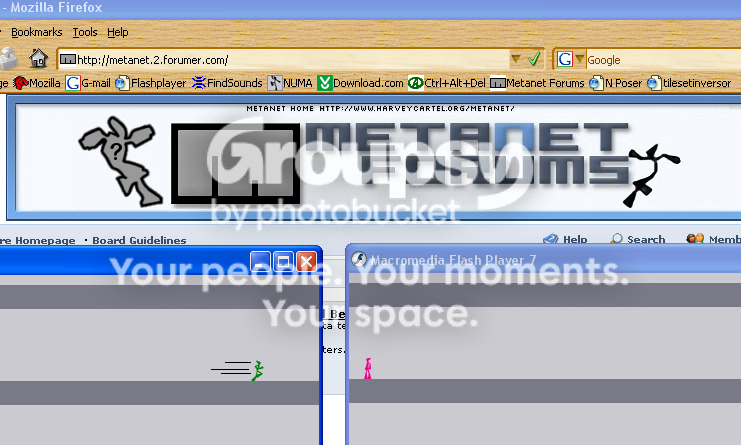

OK, im uNcoNditioNal here and on NUMA, im pretty new to the whole map making thing but i've been playing maps from numa for a while. I'm from London, England and just wanted to further entrench myself in the N community. If you have a bit of time on your hands please give me some guidance on where my maps are going wrong (or right!). Cheers.
None taken, i guess when i was a noob i thought it would be cool to highlight all the Ns in my username... *sighs*. And a great mapmaker? Wow, thank you. London? Really? London truly is the place to be.
Well, my problem with NUMA is more with the endless flow of noob maps, ok my first few maps were like that but with some guidance i realised where i was going wrong and started making reasonable maps. These days if you give a noob some constructive criticism instead of taking it onboard most of them will just head straight for your maps and snipe, snipe, snipe. I reckon though that in a while they'll all get bored an just leave us alone... hopefully.
I agree with mc_george that these days maps only stay on the newest page for a few hours, i think you definitely don't get as many comments because of this. Although i voted that i do feel noticed as a fair few experienced mapmakers occasionaly comment on my maps, i think i joined NUMA just before the torrent of noobs so i was lucky. Also an online list on NUMA is a great idea.
What with me living in a different time zone to the US, i think it would help me, but i agree that it would take up too much time to implement, i voted yes anyway.
Used to use shift and left + right, now ctrl, there are no other keys below left ctrl, and right ctrl is close to the left + right which is nice for FbF... thats my logic anyway.
Its a conundrum as some of his DDAs are pretty good, he must be a multi accounter or gets a lot of other users to vote up his maps. Is there anyway anyone can definitively check?
Rated "sacred bundles of joy" at a 4; nice looking and fun gameplay.
Comments appreciated on this map.
Comments appreciated on this map.
If its still open, i would like to sign up.
Cheers
Cheers
I've downloaded mIRC, ive typed in irc.waypasteleven.com and yet when i press ok, i just get a blank window saying "not connected". I'm sure im missing something obvious but i just can't figure it out  . What am i doing wrong?
. What am i doing wrong?
. What am i doing wrong?Having realised that i don't show up on the online list, i've concluded im an anonymous user. How do i change this?
I am incredibily dense, im now a fully fledged active user, thanks.
7/10, you seem like a nice guy both on the forums and numa.
Well i'm new-ish (8 months), and just hope i can positively contribute to the community, as well as making some mediocre maps. Cheers.
EDIT: Sorry that rating was for element... i guess i took a while writing the post.
Well i'm new-ish (8 months), and just hope i can positively contribute to the community, as well as making some mediocre maps. Cheers.
EDIT: Sorry that rating was for element... i guess i took a while writing the post.
Me being new to the forums, how do i lock it?
You being lord of sigs, any suggestions? And a rating of 8/10 for you just to keep on topic.
OK great, thank you.
Wow! Tsukatu! That would be great. Thank you very much.
Thanks, its all sorted now.
17?A reasonably mature guy.
I know it would take a lot of effort, but i think aswell as the average rating, rated maps & favourites screen. When you click on someones user name, a few more statistics like "last active on", "favourite type of map" and "date joined" etc, as well as an optional profile page would be great. Am i being too demanding?
8.5
This contest finishes the 30th. You have like... 10 days.
I think it finishes 30th November.
mc_george and IAABH are the only two I know of...
Im not in anyone's, i think. But Clifty's in mine and im sure ive seen other people with clifty in their favourites...
I have completed the game and i think about 1300 thwump deaths must have been on MTI 
Self Kills: 2348
Mines: 5547
Floorguards: 1097
Gauss Turrets: 2039
Homing Missiles: 2268
Chaingun: 368
Laser: 768
Drones: 2877
Thwumps: 1443
In total: 18775
Self Kills: 2348
Mines: 5547
Floorguards: 1097
Gauss Turrets: 2039
Homing Missiles: 2268
Chaingun: 368
Laser: 768
Drones: 2877
Thwumps: 1443
In total: 18775
Wait, mysterpower... how is it that "firecracker" is included in the list of entries and yet my entry Cutt Off, posted earlier than clifty's; isn't included. Is my map not a valid entry?
12, i think.
13
Bang on  . Id take a guess at 13 for you.
. Id take a guess at 13 for you.
. Id take a guess at 13 for you.8.5
Sorry but -1.5 for the name, other than that, a nice guy.
Sorry but -1.5 for the name, other than that, a nice guy.
9. Took to much stick, in my opinion, for getting annoyed about snipers.
I was a bit suprised about having to demo a survival, but nevertheless i like the "intruder" twist, it gives all of us in group 1 a slightly better chance.
Rated "Gomez strikes back" and "This is cool".
Here are my two, i'd like some comments:
Listen To The Hiss
Cutt Off
Here are my two, i'd like some comments:
Listen To The Hiss
Cutt Off
13
2 more votes needed
Rated all three of N_master's maps.
Rated all three of N_master's maps.
8/10
A solid, all round member.
A solid, all round member.
Rated a few of acaridi's.
Please take a look at Chelsea Dagger
Please take a look at Chelsea Dagger
That means that we're all through apart from romaniac right? Good job hendor + r_t!
I rarely rate maps any more. I just leave comments; they're far more helpful.
I agree with AMLT, although ratings are always nice, comments are definitely more satisfying.
Anyway, back on topic, 512 votes to 32 maps. But i find that once i submit a map, i look at pretty much the whole newest page, and comment on the majority of them. It just seems natural...
Great suggestions. One thing to add, on the user page, i think a lot more data could be included such as "forum name", "date joined", "location" etc. A sort of optional profile page like that of the forums. My only worry is that implementing all these changes at once would leave NUMA completely bemused for a while, maybe a week or longer. But now that we have the brilliant sweep and maestro in charge, it won't be such an issue about how much effort/time it will take. All in all i think NUMA does need a facelift and fortunately we're getting closer every day!
If its not too much trouble, id like to have a ninja of custom colour; red 69, green 3E and blue FF (A kind of soft purple!) Ideally id like to be hanging by one hand from a mine just above a zap drone, somewhere in the empty space left of goombapatrol, with "Unconditional" in the N font if you know what it is, (I saw keron_cyst mention what the font used by N was but can't remember what it was). Cheers, and great idea.
EDIT: Found it, the font is "minimal uni05-53". If this isnt possible then any font will be fine.
EDIT: Found it, the font is "minimal uni05-53". If this isnt possible then any font will be fine.
Great job, it all looks really good!
I might be wrong but have a look at Reggie's Tower. Is it just me or is a four on this map with no comments just not right? Combine this with other "high" ratings on his noobish maps and i think we have a multi accounter.
The only reason i was suspicious is due to the fact that i never see a public rated map with no comments, and for the map mentioned in the first post to get a "very good" rating just seemed wrong. Although i agree, LV, that his other maps dont really point towards him cheating the system, we'll just have to wait for his next map...
Hmmm, i guess im not really that experienced, but its the fust one i've seen with no comments. I've seen many with one or two but none with none. Ah well, i'll know not to jump to conclusions next time.
more like:
uNcoNditioNal: Look its teh mutliaccounter!
Me: OMG, its teh mutliaccounter!
LV: Its probably not a multi accounter.
Me: Maybe hez teh smart multi accounter.
KA: blah blah blah
uNcoNditioNal: OMG! it's 4/5 wif no commentz, its teh multi-accounter.
George: Bad Boy, don't hop to conclusionz, I spank you!
Me: Yeah...
Yeah...
Great. One less multi accounter on NUMA. But i object to all this "uNcoNditioNal: Look its teh mutliaccounter!" and "uNcoNditioNal: OMG! it's 4/5 wif no commentz, its teh multi-accounter".
Its unlikely that a demo of over 5000 frames is needed for any map types but survivals so maybe allow demos above 5000 frames on survivals? Or perhaps on the "Submit a map" screen, have an option of whether you want to allow long demos?
32/35
For a relative newbie, im pretty chuffed that i get the attention i do.
For a relative newbie, im pretty chuffed that i get the attention i do.
Ok, so if this idea recieves positive feedback i will start this, my first tournament. I think that this could work rather nicely:
I post some random demo data, the contestants then make a map on which this demo data works and produces some exciting close calls and a completion. I reckon it should span around a month as it is just as time consuming as a DDA to make. Hope this is reasonably clear.
If this is a rubbish idea, fair enough. But if you think it will work then i'll need some judges and also advice. Cheers.
EDIT: Feedback would be great, especially from some experienced contest organisers.
I post some random demo data, the contestants then make a map on which this demo data works and produces some exciting close calls and a completion. I reckon it should span around a month as it is just as time consuming as a DDA to make. Hope this is reasonably clear.
If this is a rubbish idea, fair enough. But if you think it will work then i'll need some judges and also advice. Cheers.
EDIT: Feedback would be great, especially from some experienced contest organisers.
I was wondering about this. I used to play with sound, then got annoyed and didnt look back until i heard that little ding as copious amounts of gold got collected.
Nothing. I think N's enemies are perfect and we dont need anymore.
I'll never forget the day some1 at my school forgot to turn sound off, and in the middle of the lesson, there was a loud Ding! Ding ding! from someones computer
That happens to me quite a lot. It's very distinctive, so you can hear an N player at 100 yards.

dling... dling... didididididididididling... bloup.... *silent ninja pose*
That is very well put! But i challenge you to put the the chaingun's sound into text!
Wow. You are clearly a master of N sounds. I think my favourite is by far "bloup"; i associate it with that moment of bliss when i finally completed "Mother thumping impossible"
Mystery power, any idea as to how long the judging will take?
9/10
A very sound guy, and Scottish too! Perfect
A very sound guy, and Scottish too! Perfect
Great thats just what i wanted, cheers LV.
Thanks for the offer, i shall PM you when i have set this contest up properly.
here's an awesome dea, since everyone seems to care more about comments then ratings, why don't we have a comment count?I really, really like that idea.
Agreed. It's a great idea.
This will all be considered over the next week or so. I need to draw up some scoring guidelines and other rules. Just one thing, will you have enough free time to judge?
Fair enough. It's a great suggestion though.
Yep. And to be honest i doubt i will start the contest until the new year.
If you PM me a set of rules i'll combine it with my own. I'll PM you the final set in about a week.
Could someone pin this please?
Wow, it's pretty even, i would have thought it would be more biased to "off". The sounds are pretty iconic though.
i actually recently got my .sol wiped... but even before I only had 5 columns completed and wasnt moving anywhere anytime soon... but now I have 3 columns completed and working on that 4th and 5thI only have 2 columns.You should try beating the game. Apart from the fun factor, it's very rewarding. By the time you finish the game, you will have become an accomplished player.
That's only cuz I spend most of my time browsing NUMA and posting on the forums. I only play episodes when I stay with my dad where I don't get internet connection.
I still don't see myself ever finishing N.
And congrats xdude_ on the highscores and the secret.
Kind of off topic, but i find it strange that most accomplished map makers haven't really made that much progress in the game.
Just to say, great job on the first two newsletters, it's coming on really well.
Trust me, beating the game is worth the effort. I've done it twice, and both times were awesome. Playing the episodes as one gives you a greater experience than any level pack at the moment could.
Very true. I've only done it once but it really helped me get out of the "as many mines/enemies as possible" map making stage. And finally beating MTI after about 6 months was truly incredible... you wait until you get to 88-4 deja!
This is the first time NUMA won't let me login, it says, and i quote: "Operation timed out (60)". I thought at first it could be to do with a firefox update i just installed, but i tried logging in on IE and no luck. I'm guessing it is just me, but i need help! I can't live without NUMA!
"OMGZORZ NUMAIZNT BE WORCINZORZ!"
I hope i don't come across like this, if i do then sorry. Sorry also for putting this in the wrong place. And sorry for being an idiot... *stops apologising*

I personally would call using a friends account to vote up your own maps, a type of multi accounting, of which i was guilty of up until recently. I wouldn't say i'm a respected member of the community but i found the need to obtain good ratings. I would agree that this is due to NUMA being centred around ratings. I also think that is was very enticing for members to become multi accounters with arachnid not actively checking IP's. Thankfully now this has changed with sweep and maestro and i hope people like i once was will be disuaded from cheating the ratings system. I think wiping the slate clean is a bit drastic but im all with deja for creating a new website. A webste more focused around tags and better defined categories as suggested by Dave: http://metanet.2.forumer.com/index.php?act=ST&f=36&t=14327. Lets look forward to a happier 2007, and with sweep and maestro, NUMA, or the new NUMA, will go from strength to strength. Lets just not forget what a great community we have!
Well, i am quite amazed at the names revealed to be multi accounting, although the fact that arachnid didn't actively look for multi accounters and the fact that NUMA is focused on ratings doesn't help. Although i think having your maps reset to zero is justified, i don't however think that banning you full stop from NUMA is the right thing to do. The names mentioned here are (mostly) respected on NUMA and i think they still will be, but their maps will be justly rated by honest users. All in all it's in my opinion that this is an integral part of the NUMA revolution.
5:1
Most of the time i make a map, and don't submit it because i realise it's complete rubbish. I must have 50 or so maps in my userlevels which i haven't submitted and 100 or so that i have uncerimoniously deleted from my userlevels.
Most of the time i make a map, and don't submit it because i realise it's complete rubbish. I must have 50 or so maps in my userlevels which i haven't submitted and 100 or so that i have uncerimoniously deleted from my userlevels.
I would have said it is closer to 100 people on NUMA who multi account.
What do you mean 20 major users? There are hundreds of major users!
It could even be argued that asoccer98 is more of a "MAJOR user" than KinGAleX, or even you, Legacy, because he has more maps and submits them more regularly.
Our community is NOT a lot smaller than we think.
I comlpetely agree with krusch, but i still mantain that there are a lot more multi accounters than sweep and maestro have managed to find so far.
You may be a multi accounter, but im sure youre neither big nor fat, and you make good maps so 8.5
Wow... that is a lot of levels. I don't play N (metanet levels) anymore, I just make maps and stay on this forum. I gave up N because of ($%* 88-4Don't give up 29403! MTI took me around a week after intensively playing until my fingers were raw, then i completed Mt. Doom within 30 minutes of MTI. That was a good evening, anyway i've completed all ten columns.
And finally beating MTI after about 6 months was truly incredible...6 months? It only took me about a day. Or did you mean it took you 6 months to get up to MTI and beat it, from scratch?
I meant it took me 6 months from scratch, i think it was about a week to actually complete the level, back in the day i had no idea about watching other peoples demos on the highscores page.
I have a 3677 frame AGD recorded, i personally think its rubbish but i have no idea how everyone else is doing...
Arachnid wouldn't put a link to that guide on NUMA. I am not exactly sure why. Well, yeah, I am sure it would help if he did, but he would keep saying he was going to, and then would never do it.
There's a name from the past! Anyway, your guide, jeffkillian, helped me out of the clustering/hidden switches period and into making decent maps, so thanks a lot. And zres, i'd like to see a more general guide by you like this, not focused on just making one level, but map making tips in general.
I think that what exuberance is confused about is that clifty, with an average rating of 4.5, is third, beneath ASTB, cannibalsock and shortshift who all have an average rating of just 4. I couldn't begin to explain why though.
Well, i think that answers exuberance's question.
Ok, much like in the map rating thread, in this thread you must comment on at least one map for every one you post. I'm starting this because in the map rating thread it goes like this: "Rated above, now rate mine".
Great... if you have a map with one more rating required for a rating that's all you want. But what if you want a comment on your map which got bumped off the newest page by a bunch of noob maps? Or what if you just need advice? Then this is the thread for you.
The focus of this thread is on sound comments, not just "4/5. Fun"
Rules
Here's a map to start us off: http://numa.notdot.net/map/72660
Great... if you have a map with one more rating required for a rating that's all you want. But what if you want a comment on your map which got bumped off the newest page by a bunch of noob maps? Or what if you just need advice? Then this is the thread for you.
The focus of this thread is on sound comments, not just "4/5. Fun"
Rules
- Along with your comment you must rate, but you need not declare what you rated in your comment.
- You may only post one map per comment.
- You may only post a map if you comment on the map directly above yours, so if you have already commented on the most recent map, you can't post another map.
Here's a map to start us off: http://numa.notdot.net/map/72660
Wait... it's not a hotel?
Ah winjet. So blunt, and slightly hypocritical.
Anyway, i've been sniped only once, does it bother me? No.
Anyway, i've been sniped only once, does it bother me? No.
Weight a minute... Is there a rating system on NUMA?
Intentional, i hope? Anyways, im looking forward to a new NUMA with less focus on ratings. They cause so many problems,

Very amusing  I liked McP's maps, but to try to bluff his way through was a little idiotic.
I liked McP's maps, but to try to bluff his way through was a little idiotic.
I liked McP's maps, but to try to bluff his way through was a little idiotic.When you get to my age, the whole 'using the rite werds' thing gets oldWeight a minute... Is there a rating system on NUMA?Intentional, i hope? Anyways, im looking forward to a new NUMA with less focus on ratings. They cause so many problems,
Heh, i like a non-conformist!
Only 88 & 89 left for me, so... 2 years to go?
Maybe three! I really think episode 88 should have been 99, but there you go.
This is very strange, is he somehow tied up in the multi-accounting thing? Because i can't think of any other reason for him to have left, as deja said, there were no hints of leaving, and no farewell map... wierd.
Ok, i noticed this the other day: On the forums, posts are ordered with the first at the top (Chronologically). However on NUMA it lists the last comment first, i personally would find it easier the other way round to make reading conversations/arguments easier. I think it would be good if this discrepancy with the forums was tidied up. Opinions anyone?
That answers that question then.
I like it the way it is, but sometimes i wish it was chronological order, maybe there could be an option where you could change it when you want?
Actually thats a good idea. How easy would that be for sweep/maestro to implement though?
8.5
Yeah, it would be a little drastic changing up the whole way NUMA has worked for the last few years, an option would be perfect.
I was just going to say that! Steal my thunder why don't you. I wouldn't want to jump right in and blindly accuse him but i would like maestro or sweep to check it out.
http://numa.notdot.net/map/73062
http://numa.notdot.net/map/73062
There isn't an option sadly, it would really help though, i wish it could show it in GMT, I get so confused
I wonder if this will get pinned.
*wonders*
Ok, now edidted so ratings are a must.
I would like to see this pinned.
*likes*
I like these suggestions, but the third has been suggested many a time, and never got implemented, maybe now with sweep and maestro things might change. I've always wanted a profile page.
Commented. HAven't you got enough comments uNcoNditioNal?There is no such thing as to many comments, and as long as you post a comment + rate on the previous map, you can post as many times as you like.
*Hastily edits* 100th post
In this festive season, it's time for N to put his differences behind him. For years you have struggled against enemies in pursuit of the purple nirvirna. But you never stopped to think "Maybe that thwump has kids" or "Perhaps that zap drone is just tragically misunderstood". So its time to forget your differences, take your favourite enemy for a drink, and reminisce 'bout the good ol' days...
To start us off, i vote homing launcher.
To start us off, i vote homing launcher.
No worries, congrats on 620th!
Floorguard, come with me to Freetown and I'll ive you a soft drink. I'll take you to the beach and ride my petrol scooter with you down the beach. We'll go to mamba point and each get a large pizza, even if the bill is 200,000 Leones.
29403, that is the crazyness that this thread deserves.
10/10
Minus points for all the hype over dreamspace, but then again dreamspace was awesome, and in general you seem like a nice guy.
Minus points for all the hype over dreamspace, but then again dreamspace was awesome, and in general you seem like a nice guy.
I've already rated N_master's, so rated one of 29403's
http://numa.notdot.net/map/73207
http://numa.notdot.net/map/73207
this is a great idea! shame that you can't really make demo's from itI wish it would be possible in N v_1.5, at least in Debug Mode.
Sadly i doubt that'll happen. It would take a lot of effort.
You have been pwnd by your own soul eating monkey.
EDIT: directed at cornacolopicus.
EDIT: directed at cornacolopicus.
You just wrote off the whole mine jumping genre there deja...
The gauss and mine are easily the most useable enemies in the game, they can be used anywhere in a map and be effective.
I have become almost addicted to using mines in a map, it just clicks in my head that looking at red in a map makes it look good.
Wow, mine discrimination, thats new. Anyways, the homing launcher is far and away the coolest guy on the list, you all forget, its "him" not "it".
who you talkin about bein inspired by. alot of my map i like but people say somethin different. i want more people to vote mine. but whatever
He's talking about clifty, who makes incredible DDAs and is the top rated author on NUMA. As for your maps, have a look on the home page of NUMA and click on map makers tutorial, it's a great place to start.
Welcome to the most innovative contest in minutes!
Here's the deal: you have to make a DDA style level around some demo data posted here on the forums. To clarify, look at: http://numa.notdot.net/map/4956. It will be judged on the following basis:
-30 for close calls
-15 for balance of propulsion items and demo
-15 for length
Judges
uNcoNditioNal
Hypnotizer
Clifty
29403
The rules:
-A completion must take place
-Maximum of 3 entries for one person
-Judges can enter
-The completion can come at any point of the demo, ie. you don't have use all the of the demo. However credit will be given if you use all the data.
-Old maps cannot be used (That seems clear if there is unique demo data!)
-Maps must be submitted to NUMA and linked to the contest page
-Code editing is NOT allowed
Prizes
1st, 2nd and 3rd: Sig tag, courtesy of BritanniaWD
4th and onwards: Nothing, thats right nothing.
Timeframe
Demo data posted on: 1st January 2007
Maps due by: 31st January 2007
Here's the deal: you have to make a DDA style level around some demo data posted here on the forums. To clarify, look at: http://numa.notdot.net/map/4956. It will be judged on the following basis:
-30 for close calls
-15 for balance of propulsion items and demo
-15 for length
Judges
uNcoNditioNal
Hypnotizer
Clifty
29403
The rules:
-A completion must take place
-Maximum of 3 entries for one person
-Judges can enter
-The completion can come at any point of the demo, ie. you don't have use all the of the demo. However credit will be given if you use all the data.
-Old maps cannot be used (That seems clear if there is unique demo data!)
-Maps must be submitted to NUMA and linked to the contest page
-Code editing is NOT allowed
Prizes
1st, 2nd and 3rd: Sig tag, courtesy of BritanniaWD
4th and onwards: Nothing, thats right nothing.
Timeframe
Demo data posted on: 1st January 2007
Maps due by: 31st January 2007
You build a level, on which demo data posted here on the forums, works and also produces close calls and a completion.
Hmm, I saw an idea for this previously - I think iangb took some data from Sendy and turned it into a DDA, but I forget what the name was and what the link was. Tsukatu and I also did a little something, but I forget which topic it was in. I'll have to go find one or the other.No worries i have seen both, give me a minute and i shall find the link.
EDIT: Here, http://numa.notdot.net/map/4943
http://numa.notdot.net/map/4956
I shall post the demo data on January 1st which you must use, and i will not tell you where it is from!
Wow, i know how annoying this is when you get to a point like this, my suggestion is play around with trapdoors in that area where you die, if you can push N out to the left wall somehow, it would be much easier.
you got pwned by a tree, one of the trees you kicked, you filthy tree kicker!
I love dodging rockets now, but remembering trying to beat Bombshelter and Zenith when I was *REALLY* bad still has me waking up in the middle of the night in a cold sweat. Still haven't quite forgiven it for that.
I like the laser drone. There can be a lot of fun strategy in trying to manipulate them. Chainguns are similar, but annoyingly random.
I couldn't agree more... with the last bit anyway, i was never "really bad", i was born a ninja!
I don't personally think that this thread will be too popular, as people don't want to have to demo maps. Anyway, i shall demo one of the above maps.
And here's mine:
http://numa.notdot.net/map/73207
EDIT: I hate to say i told you so....
And here's mine:
http://numa.notdot.net/map/73207
EDIT: I hate to say i told you so....
Wow, it will take a while but i'll post my demos here later. And god is this good, you know i love your style in general, so this is a perfect addition to my userlevels. I really like that the styles are so diverse from level to level and yet they still feel very IAABH-esque. Good job!
9. Unconditionally.
Thanks for the encouragement, it took a while to get it off the ground, so thanks to 29403 and limer for sticking with it.
http://numa.notdot.net/map/73625
http://numa.notdot.net/map/73625
9.2
-0.8 for the worst profile i have ever seen. A really nice guy though.
-0.8 for the worst profile i have ever seen. A really nice guy though.
No and yes, one pc i use is slow enough to stop me from demoing and the other is so unaffected that i completed the game.
8
Cheers
Cheers
pwned by 24903!
9.5
Great guy, great maps, great to have you on the forums mate.
Great guy, great maps, great to have you on the forums mate.
25 on my somewhat lacklustre first DDA Clint Eastwood
Ok, so you know how on the forums we get several options like subscribing to threads and forums, and also topics have a counter of how many views/comments. I personally think that these options would be great on NUMA but as usual with suggestions, i have no idea how easy/hard it would be to implement. Views and suggestions appreciated as usual.
i like this idea alot. we could use it so we don't ave to look through our maps any more.
That was my logic. I find myself having to trawl through my 45 maps looking for comments, and i have broadband so it must be hell on dial up.
Ok, so you know how on the forums we get several options like subscribing to threads and forums, and also topics have a counter of how many views/comments. I personally think that these options would be great on NUMA but as usual with suggestions, i have no idea how easy/hard it would be to implement. Views and suggestions appreciated as usual.Hell yeah - great idea. I was gonna post this though.
Great minds think alike

Oooh, I'll definitely try this. I've done it before with a demo Zugbop posted here, but his contest didn't get enough interest.
I'm glad there is some intrest, even if it is limited. Anyway a 5000 frame demo is to be used, and max_ride; why not make this your first attempt at a DD-aye!
0
Don't think i have a map worthy of bitesizing to be honest.
Don't think i have a map worthy of bitesizing to be honest.
^ i think you have afew though don't you?
Not that i know of, what's the easiest way to check?
great minds think alike... but fools seldom differ.
Oooh, get you.
PM Sweep. Simple as that.^ i think you have afew though don't you?Not that i know of, what's the easiest way to check?
Cheers, i'm pretty sure i have no maps bitesized though.
I've PM'd sweep and made a ridiculously long quote. Anyway, thanks for the compliment.I do think you should though, If I had a bitesize account I'd bitesize a few of your maps.Cheers, i'm pretty sure i have no maps bitesized though.PM Sweep. Simple as that.^ i think you have afew though don't you?Not that i know of, what's the easiest way to check?
EDIT: Sweep said i have to wait for bitesizeNUMA integration.
Personal abuse, by a long way. It ruins a map IMO.
Selfkill: 3188
Mines: 5744
Floorguard: 1141
Gauss: 2091
Rocket: 2540
Chaingun: 393
Laser: 775
Zap drone: 2964
Thwump: 1477
Total: 20313
Not bad having completed the game.
Mines: 5744
Floorguard: 1141
Gauss: 2091
Rocket: 2540
Chaingun: 393
Laser: 775
Zap drone: 2964
Thwump: 1477
Total: 20313
Not bad having completed the game.
That old pair of jeans
-Norman Cook, a.k.a. Fatboy Slim
-Norman Cook, a.k.a. Fatboy Slim
why don't you just have three judges...? w/eYeah, I should, but i've already got my last judge now. What does w/e mean?
Judging starts January 5th!
"Weekend" or "whatever", whatever seems more likely here.
First off, I'd like to thank Fallen and uNcoNditioNal for their positive and enlightening comments.shut up, tard
But I'd mostly like to thank lord_day and spiker5, especially spiker5, for their great constructive criticism. I know it doesn't really have a "map pack" feel to it, I just slapped all my NUMA maps together so that people could enjoy them all at once. Of course, some of the maps were completely useless (15-3, 14-2, 13-4, 12-3, 12-2, etc.) I just like people to play my maps, and they do, and it's all cool. I'll make sure the 3rd column is much more episodic. Thank you so much for your feedback! You guys are expert mapmakers, so who am I to stick my nose high in the air?
Decestation, I would also like to thank you for submitting useless maps and sniping people and then posting on the forums a lot like you're a really great asset to this community.
Peace,
Kimmie
deCest, relax, there's no need to be so confrontational
Mosh is learning to drive as of now, but expect him back soon.
All map estates on the top half have been filled. Quick! Reserve your loft today! Only five sections available! No, down payment, no interest, no payments period till 1995! Order now!
Beautiful and exotic locations such as:
18, to the west, already has three neighbors and is located next to various convenience stores. $0.00!
Slot 20 Has two neighbors, and located across the gray river is the northeast suburbs that are constantly thriving. Consider the financial opportunities! $0.00!
Also, if you have less cash on hand, fear not! 24, 28, and 29 are all cheaper alternatives located in one apartment. Reserve a room for a low, low $0.00 a month!*
Order today! These offers won't last long!
*Not including utility bills.
Wait i got a worse deal than that, you cheapskate, you.
I don't understand, surely you were just falling so fast that as you "crumpled" a flailing limb caught the exit switch. Can this be done keeping N alive? If so, then i agree, this could affect the highscores.
Yeah, good idea. The view counter will also keep you on track of how many people may have downloaded your map.
There should be a "number of times favorited" -counter too, and something that shows who bitesized the map and when. Then, you should also be able to browse through "Most Favorited".
All good suggestions, but like many others, i doubt it will come to anything. It would be great if sweep/maestro took notice of this though.
All of the above, although i go through phases of mainly making maps, mainly playing maps, or mainly highscoring.
The other day i realised i pronounce "AGD" as "a-gay-d". To me "a-gee-d" sounds wierd. Am i alone in this strange speech impediment?
I guess so
I guess so
Please don't advertise on the forums; if people want to play your maps, they will.
The thing is, more people need to want opitons like this for sweep to take notice.
Suprisingly my newer maps got more attention than my recent ones get: http://numa.notdot.net/browse?category=&au...r=desc&count=10
Look at the bold text in the first post. Do I have to make it big and red?
EDIT: ...or are you just trying to get 1000 posts because you're 2 posts away from getting it
DOUBLE EDIT: now it [the text] is
TRIPLE EDIT: 29403's is the best so far
I hereby retract my caption, its s***
You got pwned by Glasgow's crimelord Arthur Thompson who took offense to your "invisible" text.
In Blighty there is nich alles... well... a mini tornado took out 4 houses in London this year...
Tough break.
Yeah, kensal green wasn't the nicest part of London though.
Fair enough, sorry for my insanely benine comment.
You mean Ganter? Not me and my speech impediment right?
Cheers, i shall go RCD your levels at some point.
Pwned by yo'self!
Great, now I've got 17! 7 with 10+ votes
17 - frogger
12 - rock climb
12 - spiral fun
11 - uNcoNditioNal stones
10 - the ewil spilal
10 - gaustrailia
10 -
29403, i just realised i have rated on each and every one of your maps, there's an achievment eh?
OK, i agree with epigone, only one map per post limit has now been imposed/
I have been using the map commenting/rating threads a lot recently in an attempt to get some more of my maps rated, but i agree that it's unusual to have a top rated map with no comments. And kirby, when did i have 5 on the top rated!? I must have missed it.
EDIT: I can't find the thread but i think 29403 went through voting all my maps recently.
EDIT: http://metanet.2.forumer.com/index.php?sho...14874&st=30&hl=
EDIT: I can't find the thread but i think 29403 went through voting all my maps recently.
EDIT: http://metanet.2.forumer.com/index.php?sho...14874&st=30&hl=
You could be "The Pronouncer".I really think you should be awarded with a custom title - like "N.U.M.A (The N-lightened, Unquestionable Master of Acronyms)".You mean Ganter? Not me and my speech impediment right?
Heh, i like it.
I've been plaing N since late 2005. I have no idea when i joined NUMA, sometime in early 2006 i think. I made some really rubbish maps, then joined the forums in august.
Guys, do you think it would be a good idea if i introduce the rule that you may only post if you rate the map above? I think this would be much easier as epigone won't get a comment on his map omaha, even though he has commented.
Ok, please comment on this:
epigone's "omaha": http://numa.notdot.net/map/74007
epigone's "omaha": http://numa.notdot.net/map/74007
mIRC, but i don't use it often.
I think this is all due to 29403 rating all my maps at once. Most of the maps with ratings of 5 or 6 were at 3 or 4 when i last checked.
They weeded you out eh deja?
Oh dear...
Lucky the UK doesn't get tornadoes then.
Are you joking CTB?
http://www.bbc.co.uk/london/content/articl...s_feature.shtml
^not proper ones like Element's
Fair enough, i just wanted to feel special!
No Brakes
~The Bravery
~The Bravery
They weeded you out eh deja?No, I told them. How quickly some people forget these days. But seriously, let's not start blaming people without some evidence to back you up.
I have a horendous memory, in my mind it was xdude who started it all, sorry.
I was the only person to see the above map, but it is definitely worth a play.
http://numa.notdot.net/map/73207
http://numa.notdot.net/map/73207
It may be normal, but one map I saw... Since when do you get a top-rated map with no comments... What do you think?
It's happened to me several times.
QFE
WITCH....
Lets throw him in a lake with bricks tied to him. If he floats KILL HIM. If he dies...HE WASNT A WITCH
McP, that sounds like a good test.Nice find!
Listen carefully to klara attempting hamlet's famous speech, you might need to refer to the text below!
To be, or not to be: that is the question:
Whether 'tis nobler in the mind to suffer
The slings and arrows of outrageous fortune,
Or to take arms against a sea of troubles,
And by opposing end them? To die: to sleep;
No more; and by a sleep to say we end
The heart-ache and thousand natural shocks
Listen carefully to klara attempting hamlet's famous speech, you might need to refer to the text below!
To be, or not to be: that is the question:
Whether 'tis nobler in the mind to suffer
The slings and arrows of outrageous fortune,
Or to take arms against a sea of troubles,
And by opposing end them? To die: to sleep;
No more; and by a sleep to say we end
The heart-ache and thousand natural shocks
Agreed, demo data is now up! Get map making, and remember you have until the 31st of January.
2- You may only post one map per comment .
Can you guys not read? Sorry, but you may only post one map per comment.
I have indeed changed it, sorry bout that, i suggest that you read over the first post again.
http://numa.notdot.net/map/64477
http://numa.notdot.net/map/64477
You posted my map lol
The one map only thread is a good idea, becuase you may only want it for votes
I meant to post your map, because i don't need comments on mine at the moment
So do you agree that one map per comment is alright? Sorry, i'm a little lost Therefore i am now posting limer's map so i can discuss the thread while still keeping it going.
http://numa.notdot.net/map/73907
Your right, but my code has fucked up my map so I gotta do a new one.Took me about one minute to rustle this up.
EDIT: Remember to delete any spaces at the end of the data when you paste it into NED
It will be! But there's no excuse for not taking part, you can use as little of the demo as you like, remember.
alas, the time be here *gets started*
urrgh, not in the mood
*plans to start tomorroww*
Lol, i think i'll start tomorrow as well! But the deadline isn't for a month so there's no need to panic... yet!
I have ten or so maps bitesized now, but I already voted, so screw it.Maybe I shouldn't have made a poll? It's inaccurate.
I like the idea of integration between numa and bitesize numa.
@GEAH: I heard you were a multi-accounter too. What were your other accounts.
I may be wrong but i don't think GEAH was a multi-accounter, something about a brother on the same PC. Hence his maps still retain their ratings and he set up this thread http://metanet.2.forumer.com/index.php?showtopic=14880. At least i think that's the deal.
8/10
It went through a dark patch but i think NUMA is returning to normal, sweep and maestro are doing a great job and things are getting better all the time thanks to them. "The Sunday N" is a great addition to NUMA and the amount of noobs is quietning down. Only the other day i arrived at the newest page unable to find a single noob map. That really crystallized the fact that, for all the criticism, NUMA ain't that bad.
It went through a dark patch but i think NUMA is returning to normal, sweep and maestro are doing a great job and things are getting better all the time thanks to them. "The Sunday N" is a great addition to NUMA and the amount of noobs is quietning down. Only the other day i arrived at the newest page unable to find a single noob map. That really crystallized the fact that, for all the criticism, NUMA ain't that bad.
A good idea would be to look at the routes people to take in the highscores. Just take your time and it should be a breeze.
Or you could look at my demo. It should be pretty easy.
If this guy doesn't know how to look at high scores, do you really think he could fire up NED, load the level and demo data and watch it? Sadly, i think not.
Yes, I am, but nobody knows. [ 3 ]
I do believe that mods and admins can see who voted what on polls
Can we not just remove another 3 multi-accounters from the woodwork then?
Can you edit the first post to say "mosh (arman)" Cheers.
*claps*
Well done.
Well done.
Well, we have 2.5/10 episodes done, but arman's a busy guy so, i'd give it 3 to 4 weeks. It's going to be incredible though, so keep a look out.
No sarcasm intended? Are you joking? And do you have time to make a few levels right now? In any case i need to show you what me n Kimmie got done.
Can you make them actually work in N game (v. 1.4)
If so I would like a 'Clan Drone':
green (with red, blue and black lines) Tartan in colour
four times the size of an average drone
moves around in spiral paths, increasing to edge then decreasing back to placement from start
instantly kills N if he lands on top of it's scottish hat :-)
nudges him along otherwise, while generating bagpipes-ish sounds.
You may add bagpipes to the artwork if you wish.
Oh wow. Ridiculous comment of the year perhaps?
Twenty nine thousand four hundred and three / Twenty nine thousand four hundred and three
Buddhist, with a christian family.
I think i'm quite relaxed,
Whatever fits, but i guess i go through phases...
I've seen this mentioned so many times before, and i really like the idea. The only thing is that i guess it would be hard for sweep & maestro to sort out.
I completely forgot i was involved in this, anyway, any ideas as to when round 5 will start ska?
I see your point, but why take it away?
If, for example, Mirage rated 5 for one of Brttrx's maps, THEN you can disable it. But otherwise, I think you should let them rate.
Or am I stupid...?
If they want to rate a map, they should do it from their own account. And anyway, it takes the temptation away i guess...
^ Doors V does
and so does finding your blind spot
Some maps do deserve to be there, and some don't. Get over it, it's never going to reflect exactly what you think.
Well, you can't have a colorful siggy, so there's no point.
Hmph.
There's nothing wrong with having one even if you choose not to use it...
I'm glad this passed.
He has quite a few mates, and I'm sure they were being generous. Truth be told, I didn't actually rate those maps, and me and Alex are pretty tight.
I'm really glad he didn't get banned or warned.
I've talked to maestro, so this is all sorted now. Could someone lock this then please?
Elimination, by a long way.
Careful, Kimmie or you'll get done for spamming
Quote: Shark, January 02, 2007 07:20 pmHow many people remain? 2 or 3?
6
Me, mongy, apg, hendor, mc_george and rocket_thumped.
200th post
Nope, i don't really see what there is to be afraid of.
Great idea for a thread.
moshpit2010; A great mapmaker, but sadly a little underated. He makes maps that look incredible but also play really well. They tend to have brilliantly placed enemies, while not seeming incredibly difficult. Another thing that's great is the way he writes his descriptions, they always make a good read, take more notice of him people!
moshpit2010; A great mapmaker, but sadly a little underated. He makes maps that look incredible but also play really well. They tend to have brilliantly placed enemies, while not seeming incredibly difficult. Another thing that's great is the way he writes his descriptions, they always make a good read, take more notice of him people!
Wait, did i win? Can i now proudly put "1st place: Bridging Contest" in my sig?
^Rated^
A special request from me, please take some time to look at my maps if you haven't before, as someone bothered to go through each of my maps rating them at a zero. Even if you just rate one, it would mean a lot, thanks.
A special request from me, please take some time to look at my maps if you haven't before, as someone bothered to go through each of my maps rating them at a zero. Even if you just rate one, it would mean a lot, thanks.
31893
^Rated^
N_Master3_0 i don't think you rated any of my maps? Anyway, same again:
A special request from me, please take some time to look at my maps if you haven't before, as someone bothered to go through each of my maps rating them at a zero. Even if you just rate one, it would mean a lot, thanks.
N_Master3_0 i don't think you rated any of my maps? Anyway, same again:
A special request from me, please take some time to look at my maps if you haven't before, as someone bothered to go through each of my maps rating them at a zero. Even if you just rate one, it would mean a lot, thanks.
Good show all. To be honest, who cares who wins? We are a great community and no-one feels unhappy while they are here - that's the main thing
^Agreed^
Good job, both to sweep for organizing this great competition, and to everyone who made it onto the list.
Well, it's no longer suspicious, someone took it upon themselves to vote each and every one of my maps at a zero, seriously, you would think people have better things to do, wouldn't you?
Now that ska is away and only apg and Unconditional have their times shown, do we do what is morally right and saw what we've got or do we just keep it a secret.
Well, it won't matter much because they won't get to actually see our runs. It could encourage them to try harder though. I'm faster than apg too. Although I don't know whether or not you'd define it as "well over."
Well then, i think that this might be the round that i bow out.
9
Great guy, great maps.
Great guy, great maps.
I agree, just a farewell to the community; a true and last goodbye.
Although i'm reasonably new and definitely wasn't around two years ago, i have played a fair few of your maps, and they weren't half bad! I can't remember how i first came to play them but i always enjoyed your maps. One last map would be great, and keep your name alive! Good luck at uni.
Its not the time thats important but seriously..you should spend at least 5-10 minutes playtesting a map in my opinion never mind making it.
Personally, when i map make, it goes like this:
1st: Make tileset (30 mins)
2nd: Place objects + edit tiles (30 mins)
3rd: Playtest and edit (20 mins)
Sometimes i do that all in one go, but most of the time i make maps over two or three sessions.
I don't think that you should boast about making maps in ten minutes but sometimes a short timespan can create incredible levels like "Use of Weapons"
45637
Is this ever going to get finished?
Action, this poll has been done many a time.
It would be a mistake to delete them, but if it's really what you want to do, at least leave us a txt file. And i disagree that people don't care about you/respect you. You're a good guy.
I find I make some good maps here and there and have some hella great friends who always comment and rate my maps.
That's what this community is all about, but back in the day, it was too easy for people to multi-account. As has been said many times before, NUMA was never built to withstand this sort of thing.
This is the first time they are hearing it, too.
I'm sorry to my close NUMA friends, too. Mechtra, Mosh, uNcoNditioNal, xdude, N_Master2_0, and everyone else who is a fan, I shouldn't have done it. And I can understand if you guys are pissed.
Are you joking? I have all the more respect for you for "coming out"

All I want is to stay a part of NUMA. I fucking love NUMA, it's an escape from the piece of shit that some like to call 'the real world'.
That's also what this community is about, and i seriously doubt S&M will IP ban you. You better stay with me 'n Arman making "Two And A Half Men" though!
To sum up: you're a great person, so don't leave.
-Alex
Could i join? I know it's late, but i hadn't cottoned on to the fact that this will be incredible. Cheers.
Oh my god, just both of you shut up.
Noobs eh? Gah.
I won't post the link, but some of the racist/nazi ones were truly horendous.
Mafia - Illusion Softworks
Mafia is a classic game. It has all the elements that make for a brilliant RPG. You play as "Tommy", a cab driver in 1920's Chicago, who is taken under the wing of the mafia family of Lost Haven, the Salieris.
The thing i love about this game are the little details:
- The cars have manual gear boxes and clutches
- Cars have petrol guages
- When your gas tank gets shot at, it begins to leak fuel
- Running a red light will attract the attention of nearby cops
- The cars handle like real cars
- The weapons are all designed beautifuly
Secondly the storyline is incredible, easy to follow and could easily be the script of a film. However it's not like other games in which death isn't an issue, you really feel like death is death, and not just being sent back to the last checkpoint.
The soundtrack to the game is all based around jazzy '20s songs, and goes really well with the gameplay.
The graphics, while not astonishing (Mafia was published in 2003), really capture the essance of 1920's America. The cars are all well designed and Lost Haven is brilliantly made, with its own racetrack, airport, harbour etc.
Finally, the cars; they are all based around real models and the physics for each individual one are perfect. It's the opposite of GTA, so you have to actually know how to pick a specific car's lock before you can steal it. And if you're caught red-handed there will be hell (and a steep fine) to pay.
To sum up: If you want to buy a game that's different, then Mafia is for you. It is the best game i have played by a long, long way. Anyone else play Mafia? If you do, go right ahead and post your views.
Cheers.
FREE DEMO: http://www.mafia-game.com/indexnews.htm
The Demo & more screenshots can also be found at the above adress, under "Downloads"


Why do people do this?
Anyway, i checked through krusch's google link up to page 100 and found about 15 more levels. Anyone who wants to can go through pages 101-200 if they really want but the further you go the less likely you are to find his maps.
Updated txt file below.
Anyway, i checked through krusch's google link up to page 100 and found about 15 more levels. Anyone who wants to can go through pages 101-200 if they really want but the further you go the less likely you are to find his maps.
Updated txt file below.
Dressed to kill: http://numa.notdot.net/map/75239
Well download the demo then! It's well worth it.
Sure thing, i shall upload them in a minute.
There we go, some pictures uploaded. And the demo is from the official Mafia site so it's definitely virus/spyware free.
9/10
Shame, you're a good guy. I'll have to get someone else to do those sig tags you owe me
Anyway, cheers.
Anyway, cheers.
Eminence Front
~The Who
~The Who
At the moment, i find comments on NUMA shocking. Most people take a while to play the level, then come up with something like "4/5 Fun" and supress the comments that could be really helpful. It would be great if we changed this.
All i'm asking is for people to take a little more time to comment and give the author some really valuable feedback.
For example:
This is what really helps us improve as mapmakers.
Most of you will say to yourself, "Yeah, I agree" and promptly do nothing, then wonder why people don't leave comments on your own maps. So do what is right! Pledge that you will take more time to comment on maps, and really help people to improve as mapmakers.
Finally, try not to rate without commenting again, although in some cases it's excusable, most of the time it's tough as an author to get a rating without knowing why people voted the way they did. Comments are the way forward, and a NUMA based around comments not ratings would be a much better place IMO.
Thanks for taking the time to read this.
All i'm asking is for people to take a little more time to comment and give the author some really valuable feedback.
For example:
Quote: moshpit2010Yasmaster, this isn't worth a 3/5.
I'm giving this a 4/5 - the only thing that is holding it back is the launchpads. I generally don't like to see them in Action maps. This map's usage of them wasn't bad, but rather, more neutral than anything.
The gameplay was great, though. I liked the beginning which forced an immediate dodge of the rocket - a great way to start an Action map.
The gameplay is a little funky, but only because it's based on an equally funky tileset. I feel like this is some scene on the moon filled with littered spacecraft parts and such floating about.
The Thwumps were a nice addition.
Nice placement on that Gauss turret.
I can't help but feel the exit space is a little awkward, though. After being launched up there and dodging whatever rocket followed you, it's just.. kind of.. there. No great "Final" challenge. A Gauss turret up there might have alleviated this, but it's more of a "Eh.. 'I' think it would have added to the feel" thing. I could be completely wrong.
4/5, nonetheless. Nice map.
This is what really helps us improve as mapmakers.
Most of you will say to yourself, "Yeah, I agree" and promptly do nothing, then wonder why people don't leave comments on your own maps. So do what is right! Pledge that you will take more time to comment on maps, and really help people to improve as mapmakers.
Finally, try not to rate without commenting again, although in some cases it's excusable, most of the time it's tough as an author to get a rating without knowing why people voted the way they did. Comments are the way forward, and a NUMA based around comments not ratings would be a much better place IMO.
Thanks for taking the time to read this.
Yes, but i seem to remember that he put them into a text file in anticipation, asked people's opinions, then decided not to. He wouldn't just delete them without any warning like smtid did, i hope.Idiot.I swear you were about to go delete all of your maps from NUMA for a fresh start...
No offence to him of course, but its an idiotic act to delete your maps. Especially if he comes back to make more.
8392
I only submit about half of my levels to NUMA. And i'd say that, on average, i take about an hour on a level.
10
^9^
You don't know me, "whykickamoocow".
You don't know me, "whykickamoocow".
Wow, that's hilarious. krusch deserves it though.
Where's the option for an astheticly pleasing author? I consider myself to make levels look great, the gameplay in my maps though is never great though.
41926
Sign me up, sounds good.
Is initially determining "The Leet" random, or based on skill?
Is initially determining "The Leet" random, or based on skill?
Sounds like a good idea.
Sign me up as a noob.
Sign me up as a noob.
or just read the readme file that came with the game when you downloaded it
That would be a better idea. The readme tells you all you need to know.
Hmm, i dunno. I consider people like atob and lv to be the leet. It would be an honour to be "buddied" with someone like that. I don't think being here for 5 or 6 months really qualifies me to be considered elite. Thanks for the compliment though!
Sounds good. If you want, i'd love to be included.
8/10
Nice guy, made me an awesome sig too.
Nice guy, made me an awesome sig too.
Well, just to update all of you who are eagerly anticipating this stunning map pack, production has momentarily ceased. We all lead busy lives, and living in different time zones doesn't help. Anyway, we have the first three episodes created and playtested & the next seven will be sorted soon enough.
As for the maps, as you can imagine they all look great thanks to me and Arman, and Kimmie has the gameplay covered.
Cheers,
Alex
As for the maps, as you can imagine they all look great thanks to me and Arman, and Kimmie has the gameplay covered.
Cheers,
Alex
It was obvious maestro had edited the votes. Use some sense!
And I swear McP3000 is still using NUMA... He has been commenting on maps.
Me too, and i'm sure i've seen him submit the odd map recently. Only a week or so into his punishment.
Hmm, there are 20 in all, and 12 isn't the most thrilling of them all. Here are my favourites:
Level 5 - Fairplay - Don Salieri tells Tommy that he has a lot of money riding on the upcoming auto race, and that word has it that a European has come to Lost Heaven for the race with possibly the fastest racing machine in the world. Salieri wants to even the odds / cut his brakes! [/align]
Level 8 - The Whore - You are sent to kill a prostitute but things go wrong and you find yourself escaping over the rooftops, police with rifles in pursuit. You finally find a way down into a church and make off in a hearse!
Level 20 - The death of art - The finale to the game, and what a finale it is. Without giving away the storyline, blood is spilled, people betrayed, and artwork destroyed. It's worth buying the game just for this level!
Level 5 - Fairplay - Don Salieri tells Tommy that he has a lot of money riding on the upcoming auto race, and that word has it that a European has come to Lost Heaven for the race with possibly the fastest racing machine in the world. Salieri wants to even the odds / cut his brakes! [/align]
Level 8 - The Whore - You are sent to kill a prostitute but things go wrong and you find yourself escaping over the rooftops, police with rifles in pursuit. You finally find a way down into a church and make off in a hearse!
Level 20 - The death of art - The finale to the game, and what a finale it is. Without giving away the storyline, blood is spilled, people betrayed, and artwork destroyed. It's worth buying the game just for this level!
1. Demon Days - Gorrilaz
2. Some Cities - Doves
3. Costello Music - The Fratellis
4. To All New Arrivals - Faithless
5. Tired Of Hanging Around - The Zutons
6. Why Try Harder - Fat Boy Slim
7. St. Elsewhere - Gnarls Barkley
8. Twelve Stops And Home - The Feeling
9.The Back Room - Editors
10. Language. Sex. Violence. Other. - Stereophonics
2. Some Cities - Doves
3. Costello Music - The Fratellis
4. To All New Arrivals - Faithless
5. Tired Of Hanging Around - The Zutons
6. Why Try Harder - Fat Boy Slim
7. St. Elsewhere - Gnarls Barkley
8. Twelve Stops And Home - The Feeling
9.The Back Room - Editors
10. Language. Sex. Violence. Other. - Stereophonics
8/10
Checking through your posts you seem like a sound guy, i don't know you too well though.
Checking through your posts you seem like a sound guy, i don't know you too well though.
31111
31094
31094
You have to put them in your userlevels file.
Sorry, there's no other way.
Hmm, i know everyone can't get onto NUMA, but i seem to get a different error message to everyone else:
Should i be worried?QuoteDB Error: connect failed: [nativecode=Unable to connect to PostgreSQL server: could not connect to server: Connection refused Is the server running locally and accepting connections on Unix domain socket "/tmp/.s.PGSQL.5432"?] ** Array
12
Quite petty and young acting most of the time.
Quite petty and young acting most of the time.
^ lol its uNcoNditioNal (capital N's)
anyone know when its going to be back up?
I'm glad someone can get it right (I'm pedantic like that). But back on topic, its been down for around 40 hours fr me.
9
Contributive, calm and generally sound.
Contributive, calm and generally sound.
Depends which time zone you're in. It probably went kaput just as you went to sleep / i woke up, or something like that.
Waaait, i live in London too, and it hasn't worked since yesterday morning for me. You don't live in Freetown, Sierra Leone then 29403?
7
Simple, a little bland maybe, but not too shabby by any means.
Simple, a little bland maybe, but not too shabby by any means.
8/10
New, but nice. Intelligent posts, and "A man once said to me...You'll do great things in life kid, all you have to do is pull that stick out of your butt." cracks me up every time i see it
New, but nice. Intelligent posts, and "A man once said to me...You'll do great things in life kid, all you have to do is pull that stick out of your butt." cracks me up every time i see it
Looks good, try to use other objects; one ways, doors, drones etc. If you take a lot of time over it, the flow should be self explanitory, and as 15__ suggested, you can always resort to a flow demo.
Elevator - Hot Hot Heat
That's exactly my point, it's 11:30 pm where i am.
13
This is about psychological ages, ie. how the person acts, not how old they actually are.
This is about psychological ages, ie. how the person acts, not how old they actually are.
13I know. You saying that indicated a part of your phycological-ness to me. Did that make sense? At all?
This is about psychological ages, ie. how the person acts, not how old they actually are.
15 to Twistkill.
13
Made a little sense, but phycologicalness isn't a word.
Im in. 100% this sounds great.
^You are joking right?^
If mosh completes it in 679 frames, and uNcoNditioNal completes it in 702 frames, mosh wins.
^You are joking right
?^I think he means what time. And the answer is whenever KA feels like it.

To see how it works quote me and the code will show up.
14 ish
10/10
A really great guy, i wish i could be like him.
A really great guy, i wish i could be like him.
Same for me, i thought it was just me though.
My entry.
Ah crap, i'll be having nightmares 'bout this for years to come. Only one off !
!10/10
I voted no.
I agree with JeCa. I think both threads serve a different purpose, the map rating thread for when you just want a rating, no more no less, and the map commenting thread for when you want some sound advice / comments. I know it would save space but i don't think merging would be a good idea.
I agree with JeCa. I think both threads serve a different purpose, the map rating thread for when you just want a rating, no more no less, and the map commenting thread for when you want some sound advice / comments. I know it would save space but i don't think merging would be a good idea.
Et la miene: http://numa.notdot.net/map/76086
Brian
Looks good, i would offer to help but i have a lot on my plate right now, i might be around for column 1 though.
^Francine^
That would be a good idea.
That would be a good idea.
Very helpful, cheers LV.
Likewise, nothing we can do 'bout it though.
Thanks, Metanet. Just thanks.
McP, most of your threads are about average. This just doesn't seem to be up to your usual standard. The whine placement seems to be a tad erratic and the rants are a little clustered in the center. Overall, it's a pretty straight-forward thread. Not much re-read value.
1.5/5
Good lord, i'll still be laughing at that next week!
This is just a post to get this topic back up a little bit. I really want to see this work. I'm really excited for this.
Sorry that I accumulate another post for this... therefore I'll write something meaningful.
*ahem*
Poop.
Me too, and if you need a hand with anything, feel free to ask.
I get a connection about a third, maybe a half of the times I try.Yeah. I can take that, but what if you need to look at 60 maps?
But really... Its all right, guys. A minute and a half out of your life isn't going to kill you. If you really can't stand it... Well, thats just sad.
1 hour gone.
Agreed, and its not just playing maps: Playing, rating and commenting takes much longer. I reckon to do that for 60 maps would take 2 1/2 hours or so.
Good idea, decent execution.
The levels are all pretty good, but if you allow me to nitpick, I must say the background art is very ugly at times.
I was going to say that, i think they would be better with just a solid background to be honest.
9/10
Awesome image maker, great guy, dreamspace.
Awesome image maker, great guy, dreamspace.
I like the raw concept though, expect me to enter.
4:
Two complete, one in progress (and kickass at that), and one that keeps building.
1 in progress, the one Kimmie mentioned; "Two And A Half Men"
8/10
I don't really know you, that will probably change with "1337 and the mob" though...
I don't really know you, that will probably change with "1337 and the mob" though...
I would suggest that your firewall will not let "N" access the internet. If you have access to the firewall settings, simply click program control or some such option, find N and allow it access to the 'net. Of course i could be completely wrong but just give it a shot.
Sorry about that but I would call this a wasted thread
3 things:
Firstly don't double post; use the edit button by the top right of your posts.
Secondly, i think you mean "I wouldn't call this a wasted thread"
Thirdly, i would call this a wasted thread.
Mods? Some lockage is in order.
I reckon it would be quite helpful if we set up a thread with all sorts of helpful links into NUMA. Both for the new guys and for the convenience of the rest of you. I know that this exists: NUMA hacking but i think a thread on the forums to save you having to write it all out / understand it would help.
What i mean is things like: Shows all unrated maps
I don't know the system too well so any of you who do, posting some useful links and tips on manpulating NUMA to your needs would be greatly appreciated, and added here. Cheers.
Useful links
Maps with 4 ratings
Newest unrated maps.
Random unrated maps.
Downloads the top ten playable maps in a .txt file.
Shows you a random non-playable map, in case you need some inspiration.
Download all an author's maps in a text file (Replace "maestro" with desired author)
All of an author's unrated maps (Replace "29403" with desired author)
What i mean is things like: Shows all unrated maps
I don't know the system too well so any of you who do, posting some useful links and tips on manpulating NUMA to your needs would be greatly appreciated, and added here. Cheers.
Useful links
Maps with 4 ratings
Newest unrated maps.
Random unrated maps.
Downloads the top ten playable maps in a .txt file.
Shows you a random non-playable map, in case you need some inspiration.
Download all an author's maps in a text file (Replace "maestro" with desired author)
All of an author's unrated maps (Replace "29403" with desired author)
Steve.
10/10
Great guy, keeps this forum ticking along nicely with calm, sound posts, and is generally a nice guy.
Great guy, keeps this forum ticking along nicely with calm, sound posts, and is generally a nice guy.
No worries mate, welcome to the community.
0/10
You stole my custom title, grrr
You stole my custom title, grrr
Spoiler
10/10 Rico espantanso the singing matedor.
*Votes 3*
Heh, nice going wedgie.
And some of you guys really need to get out more. 8 times a day? Tsssh.
Heh, nice going wedgie.
And some of you guys really need to get out more. 8 times a day? Tsssh.
Good to read but a little short. Another few paragraphs would've done the trick IMO.
i say yes. its annoying when you see your map and it has a public rating but no comments. i want to know what i did right (or wrong
so yes
Geti, the reasons you gave seem to back up not merging the two threads. Your example shows the purpose that the commenting thread serves. The map rating thread is mainly used for maps with 4 ratings that people just want to get a public rating. I stand by my statement that the two threads serve a different purpose, i think it would be a mistake to merge them.
Nothing wrong with either suggestions, t'would be nice to see them both implemented.
What's that one thing you've always dreamed of? It could be as trivial as aceing a maths test or as serious as ending world poverty. As kindhearted as working as a doctor, or as self-centered as buying your own island. Try to be honest, but most importantly:
Share your dream, people![/b][/color]
29403's dream: To be a 5'10" darts champion / mathematician / business man / scientist, with a pool in his garden.
kirby's dream: [Only suitable for B&T!]
Trogdor007's dream: To put Babies on Spikes. *squeak* *squeak* *squeak* *Squish/THUMP*
maestro's dream: To be the highly influential head of a Fortune 500 company and to own three Greek islands, with a ferry service between them all and the mainland.
Teedle's dream: To be Thom Yorke, only less wierd looking
Kablizzy's dream: To change and revolutionize the world.
iangb's dream: To be fully content with his life.
Viridovix's dream: To protect the world from itself.
epigone's dream: To win the lotto & retire early.
McP3000's dream: To become a professional model or baseball player.
kamikaze3000's dream: To be honest with himself.
J.C.'s dream: To conqur the worl one computer at a time
Obby's dream: To get through college, go into medicine, marry a certain someone, have kids, be happy, and help others.
DemonzLunchBreak's dream: To understand everything. And then eventually be happy
99TURTLE99's dream: To cure some, if not all, kinds of cancer. Somehow. And to marry and have kids.
Tsukatu's dream: Super Saiyan 4 (...and to use it to save the worl from being conqur'd by JC.)
theinvader's dream: To have a lasting effect on the world. Preferably a positive one.
scythe33's dream: To live in the bahamas with a fabulously wealthy dumb sexy blonde chick who thinks he's the best thing since sliced bread.
Element's dream: To grow up fine and healthy, to become better at skateboarding, be a pro, and influence every young skater to be a better person. And lastly, have a wife and wonderful children.
Pavel's dream: To have sex with Kablizzy.
Brttrx's dream: To find her.
Django's dream: To write a book or create a manga series, called Rune Master or something like it. Also, to get a nice girlfriend.
Mechtradevil's dream: To own a mansion filled with six custom varieties of every guitar, acoustic and electric, ever made, with a ballroom practice space and perfect recording studies and a balcony that overlooks the brilliant sun setting into the hot sea.
Blizzard's dream: To save society from itself.
The_Juggler's dream: To end all bigotry - by any means necessary.
beastie's dream: To have his own successful photography business, based in Sweden.
fingolfin's dream: to end stupidness by some means that are nonviolent To end stupidity by non-violent means.
smort's dream: To join Weta Workshop.
Zres' dream: To be a famous game programmer.
Impulse's dream: To learn programming and change the internet with it. Make it better, faster, more user friendly, more fun and more secure!
jbaker's dream: To graduate from the U. of Nebraska with a majer in chemistry and a minor in astronamy,
and to get a job as a chemist at NASA((National Areonautics Society of America)I think)
Share your dream, people![/b][/color]
29403's dream: To be a 5'10" darts champion / mathematician / business man / scientist, with a pool in his garden.
kirby's dream: [Only suitable for B&T!]
Trogdor007's dream: To put Babies on Spikes. *squeak* *squeak* *squeak* *Squish/THUMP*
maestro's dream: To be the highly influential head of a Fortune 500 company and to own three Greek islands, with a ferry service between them all and the mainland.
Teedle's dream: To be Thom Yorke, only less wierd looking
Kablizzy's dream: To change and revolutionize the world.
iangb's dream: To be fully content with his life.
Viridovix's dream: To protect the world from itself.
epigone's dream: To win the lotto & retire early.
McP3000's dream: To become a professional model or baseball player.
kamikaze3000's dream: To be honest with himself.
J.C.'s dream: To conqur the worl one computer at a time
Obby's dream: To get through college, go into medicine, marry a certain someone, have kids, be happy, and help others.
DemonzLunchBreak's dream: To understand everything. And then eventually be happy
99TURTLE99's dream: To cure some, if not all, kinds of cancer. Somehow. And to marry and have kids.
Tsukatu's dream: Super Saiyan 4 (...and to use it to save the worl from being conqur'd by JC.)
theinvader's dream: To have a lasting effect on the world. Preferably a positive one.
scythe33's dream: To live in the bahamas with a fabulously wealthy dumb sexy blonde chick who thinks he's the best thing since sliced bread.
Element's dream: To grow up fine and healthy, to become better at skateboarding, be a pro, and influence every young skater to be a better person. And lastly, have a wife and wonderful children.
Pavel's dream: To have sex with Kablizzy.
Brttrx's dream: To find her.
Django's dream: To write a book or create a manga series, called Rune Master or something like it. Also, to get a nice girlfriend.
Mechtradevil's dream: To own a mansion filled with six custom varieties of every guitar, acoustic and electric, ever made, with a ballroom practice space and perfect recording studies and a balcony that overlooks the brilliant sun setting into the hot sea.
Blizzard's dream: To save society from itself.
The_Juggler's dream: To end all bigotry - by any means necessary.
beastie's dream: To have his own successful photography business, based in Sweden.
fingolfin's dream: to end stupidness by some means that are nonviolent To end stupidity by non-violent means.
smort's dream: To join Weta Workshop.
Zres' dream: To be a famous game programmer.
Impulse's dream: To learn programming and change the internet with it. Make it better, faster, more user friendly, more fun and more secure!
jbaker's dream: To graduate from the U. of Nebraska with a majer in chemistry and a minor in astronamy,
and to get a job as a chemist at NASA((National Areonautics Society of America)I think)
You would like to be a pool on your garden?
Fair 'nuff.
Fair 'nuff.
I realized that! Your dream is now "To be a 5'10" darts champion / mathematician / business man / scientist, with a pool in his garden."
I think London would be a better idea than Manchester to be honest. Anyone want to take hold of organising the UK MetaCon?
Recounting the little episode that just happened in oxford street:
Quote: Religious fanaticYou're going to hell!
Quote: uNcoNditioNal / AlexNah mate, HMV
Matt?
Spoiler
Ben10/10
alex (lol)Pfff... great "guess", uh, Harry?
uNcoNditioNal / Alex
Wait, Ben, could you edit the first post with all the discovered names? It gets awful confusing otherwise.
Get over it people. NUMA's down, and probably will be for a while. Go find something else to do.
All these suggestions depress me. The reason that N has done so well is because it is so simple. Over complicating it with new modes and the like would kill it IMO.
Maybe that virus deleted your progress in protest of your bad spelling / grammar 
There's no way you will legitimately get your hands on a completed .sol file. You'll just have to start over.
There's no way you will legitimately get your hands on a completed .sol file. You'll just have to start over.
I really think that this thread should be locked, as it serves no real purpose. In its place i think there should be a locked "NUMA status page" here on the forums on which S&M can update us on when they plan to do work on it, if it is down at that point in time and when they expect it to be back up. I think this would be very useful but also easy to implement / maintain. Thoughts anyone?
I don't really care. It annoys me when i see it, but just makes me ignore that author completely. I don't like the way some noobs vote 5 on other noobs' maps then say "Check out my maps", but its not really a big issue.
Well how many 30 year olds d'ya think would be interested in some flash game? It doesn't really suprise me.
I see. But i still think that a status page would be a good idea. I don't know how feasible that is for you, but it would stop most of the pointless "ZOMG NUMA IZ DOWN" posts. It would help people tell if it's a problem soley on their PC or on NUMA's server. Lastly, does NUMA only get back up and running when arachnid is around, or do you have a rough idea when you can get everything sorted?
You'll definitely get it redone in no time! But use a back up thingy-magig.By that, i think 29403 mean keep a copy of your .sol in "My Documents".
The n_v14b_userdata.sol, or ".sol", is the file that contains all your N peference datas. That includes your Configuration settings, your progress in your game, your personal bests, etc. With this file, you can move around your progress in the game to other computers and such so that you won't need to start all over on a new computer, as that can be quite tiresome.
Its Location
Windows 2000, XP:
C:\Documents and Settings\Username\Application Data\Macromedia\Flash Player\#SharedObjects\random series of letters and numbers\localhost
Windows 95, Me:
C:\Windows\Application Data\Macromedia\Flash Player\#SharedObjects\random series of letters and numbers\localhost
*Application Data and subfolders will be hidden.[/i]
To be able to see the files:Mac OS 9:
- Go to Control Panel > Folder Options > View.Select the option to show hidden files or folders.
- A simple way to find your .sol file is to use the Search program. Search for All Files and Folders. Type in .sol in the first box. Before engaging the search, drop down to More Advanced Options and be sure that "Search system folders", "Search hidden files and folders", and "Search subfolders" are checked.
Macintosh HD/System Folder/Preferences/Macromedia/Flash Player/#Shared Objects/random string of letters and numbers/localhost
Mac OS X;
/Users/Short name/Library/Preferences/Macromedia/Flash Player/#SharedObjects/random series of letters and numbers/localhost
Doesn't the game do that already?QFE
You have 5 levels and you must complete the episode before the time runs out - It's already there
Great observation 29403
Oh, i see. Fair enough, i see your point. Most of the newer guys are in the 11-14 demographic but as you said the more established members (Like me ) are more towards the 15-18 group.
) are more towards the 15-18 group.No. I've spent most of my life in London and i'm used to it i guess. I really love the atmosphere (not literaly of course ) of London and wouldn't live anywhere else, except maybe Toronto. I don't actually live in London, but i commute in every day and find that you really need two showers a day to not feel like you just emerged from sweeping a chimney. I wouldn't change it for the world though.
) of London and wouldn't live anywhere else, except maybe Toronto. I don't actually live in London, but i commute in every day and find that you really need two showers a day to not feel like you just emerged from sweeping a chimney. I wouldn't change it for the world though.I used to be the young guy, but then I actually spent so much time here that I aged. Now I can claim seniority over the rest of you twerps.
^ Wait, you're 13
^I'm 15 and suddenly feel all important.
^Has completed 94 episodes, and takes exuberance to a new level
Idiot
What? You stole someone's .sol file? That's not good my friend.
I have looked at that thread many times, and clearly in more detail than you.
JeCa, please click the link to "Download a completed .sol file", you will see that it's not a completed .sol!.
EDIT: I haven't changed anything, check the original post if you don't believe me.
Quote: Keron_Cyst @ Metanet Forum Rules
Want a totally completed .SOL?
Click here!
Since you can find it here, please do not ask for any elsewhere. Continuous violators shall be penalized.

JeCa, please click the link to "Download a completed .sol file", you will see that it's not a completed .sol!.
EDIT: I haven't changed anything, check the original post if you don't believe me.
Great job. Very helpful and well presented. Cheers apg.
No. Chainguns are by far the worst enemy IMO. I agree that they are too random, and a stream of unavoidable bullets is what M&R always planned for, i think that that would work a lot better.
Woah mate, relax, and if you wouldn't mind could you remove those references to the secrets in your post, most people who haven't completed N don't want the suprise ruined. And i'm sure you understand that we can't share .sol files. Sorry for the unhelpfulness my friend.
I agree with you, but there are a few exceptions:
This is just a post to get this topic back up a little bit. I really want to see this work. I'm really excited for this.
Sorry that I accumulate another post for this... therefore I'll write something meaningful.
*ahem*
Poop.
^Is a judge in my "DDI contest" that has not yet recieved an entry ... 1st place is there for the taking guys.
Limer. No doubt.
Yeah, don't rub it in. Good job on those two maps though.
Well earlier in this thread, sweep listed for some authors the maps they'd had bitesized. But when i asked him to do the same for me, he said i have to wait until biteizeNUMA integration. The only other option is to go through each page looking for a map of yours (I think; correct me if i'm wrong)
Nay. Be it 29403 who wingeth his way here?
Each time you click the left mouse button, a frame passes. Holding a button at the same time as clicking the mouse will cause N to move, just mess about with it and you'll get used to it.
Sure you can. A dream is after all a dream. And sorry 'bout that "a" that somehow got in there.
29403
Limer
You're joking.
Qix
Qix
I hardly ever use the userlevels box. I'm so used to using the plain map data these days.
I doubt that this will start particularly soon; Kimmie's forum account is kaput at the moment.
Ok;
02-1 is attached, and i shall add any more levels i do to this attachment.
02-1 is attached, and i shall add any more levels i do to this attachment.
Here's my progress so far:
- 02-1
- 02-2
- 02-3
Sounds really interesting. I can't think of anything wrong with this.
Sign me up! It looks awesome.
10
Could you update the first post? Cheers 29403.
rated 5/5
Now for an older map...
http://numa.notdot.net/map/63624
^Didn't actually rate my map^
Anyway rated exuberance's.
http://numa.notdot.net/map/77348
Django.
rated someof 29403's
http://numa.notdot.net/map/77086
http://numa.notdot.net/map/77419
^Had to rate this one^
http://numa.notdot.net/map/77472
You spelt uNcoNditioNal wrong in the first post, sorry to be so damn pedantic.
Hiliarious. Slient_night is just as bad as N_master3_0, but at least you dispensed with the mash of capitals, numbers and underscores.
Not bad, but a little clumsy.
6/10
6/10
T'would be a good idea, otherwise things get awful confusing.
Woah, dude that was quick, now all that reamins is to change your sig and "N_Master3_0" will be gone for ever. 
USE NUMA, NOOB!
What i think the invader is trying to say, is use the website designed for this sort of things: NUMA. On that website, you can find all manner of maps, not just DDAs. Cheers.
It gets on my nerves, i'm a perfectionist and impossible gold pieces really go against my nature.
I don't really think it's a great idea; in my opinion, it would just encourage more sniping by people who want maps deleted. After all we really can't discriminate against bad map makers, as it would just discourage them from trying to become better.
A better idea would be for every "established" member to try to comment on a few noob maps each week giving them tips on becoming better. Deleting others' maps goes against the concept of NUMA.
A better idea would be for every "established" member to try to comment on a few noob maps each week giving them tips on becoming better. Deleting others' maps goes against the concept of NUMA.
From his comment he seems like he's joking, but given he actually rated it a zero, which you seem pretty sure about, it seems he hasn't forgotten or forgiven. Let's just see what he does in future.
29403: Tom (Tom & Jerry) - Racing green
Kimmie: Etnies logo - Fuschia
Limer: Twisted branch; much like http://2.forumer.com/uploads/metanet/av-3123.png - Royal Blue
amconline: http://www.gravewebservices.com/images/gwsfront8_04.jpg - Silver
Arman: A movie camera; something along these lines - Crimson
Kimmie: Etnies logo - Fuschia
Limer: Twisted branch; much like http://2.forumer.com/uploads/metanet/av-3123.png - Royal Blue
amconline: http://www.gravewebservices.com/images/gwsfront8_04.jpg - Silver
Arman: A movie camera; something along these lines - Crimson
Mines, by quite a significant margin.
To clarify, I think that sweep means:
- You should have emailed the bitesizeNUMA question to bitesize(at)notdot(dot)net.
- You should have sent the name change request to numa(at)notdot(dot)net
I'm just trying to put that into context, forgive me for oversimplifying.
Please refer to this thread: http://metanet.2.forumer.com/index.php?showtopic=15570
As I know how annoying it must be for sweep / maestro / arachnid to constantly recieve PMs on these subjects. Following the advice in that thread would probably "garner" you real results.
As I know how annoying it must be for sweep / maestro / arachnid to constantly recieve PMs on these subjects. Following the advice in that thread would probably "garner" you real results.
8/10
A little cluttered, but i love:

A little cluttered, but i love:
Attached are my first three levels.
Cheers, and tell me what you think
Cheers, and tell me what you think
is he actually gonna make these?
I expect so: I don't think he has been online since he first created this thread, and if they only take ten minutes each, it shouldn't be too bad.
Could you possibly provide a guide of how to download them / where to put them? Thanks.
Can my silver N be lying on a beanbag beneath the metanet symbol (bottom center) with some headphones on. Cheers.
Who cares "What ratings mean". It would be a darn sight easier than sifting through 212 other authors to find my position. It really wouldn't be hard to do either.
Simple but great idea.
Simple but great idea.
9/10
They've done a brilliant job up until now, and i'm sure they'll go from strength to strength.
They've done a brilliant job up until now, and i'm sure they'll go from strength to strength.
For me, it has to be golf:
I've played for around 5 years now and play at a regional level. It takes up a lot of time (and money) but can be so rewarding. Aswell as being physicaly able to walk for 4 hours straight with a golf bag on your back, you need to be mentally ready for everything. If you hit a bad shot off the 1st tee, that can influence the rest of your round, but to be a great golfer, you need to put it out of your mind and keep focused (easier said than done). Golf is also one of the few sports that you can play on your own, and that really makes it more accesible than having to get 10 mates together for a game of football.
To sum up; nothing could be better than strolling up the 18th in Barbados in glorious sunshine having enjoyed 4 hours of exercise, good company and gentle competition...

I've played for around 5 years now and play at a regional level. It takes up a lot of time (and money) but can be so rewarding. Aswell as being physicaly able to walk for 4 hours straight with a golf bag on your back, you need to be mentally ready for everything. If you hit a bad shot off the 1st tee, that can influence the rest of your round, but to be a great golfer, you need to put it out of your mind and keep focused (easier said than done). Golf is also one of the few sports that you can play on your own, and that really makes it more accesible than having to get 10 mates together for a game of football.
To sum up; nothing could be better than strolling up the 18th in Barbados in glorious sunshine having enjoyed 4 hours of exercise, good company and gentle competition...
This might seem obvious, but while playing N, right click on the screen and select "settings". Then make sure that the slide bar is moved as far as possible to the right.
And yet the attached image clearly proves that I am xdude, 
Does anyone have an explanation for my unwitting identity theft?

Does anyone have an explanation for my unwitting identity theft?
If only I were xdude


All of the above suggestions would be great.
Also, a counter for each author of how many maps they've had bitesized would be great.
Also, a counter for each author of how many maps they've had bitesized would be great.
Oh guys... you are so funny.
Give the guy a break. English probably isn't his first language. Don't give the guy a break, English is his mother tongue...
That said, I have no idea what he is trying to say.
That said, I have no idea what he is trying to say.
I'm looking forward to this . My demoing is on tip top form at the moment.
. My demoing is on tip top form at the moment.Great minds think alike, eh, george?
9.5
-0.5 for taking 11-3 off me.
Nah, you're a great guy. Relaxed, cool and always willing to help out with images.
-0.5 for taking 11-3 off me.
Nah, you're a great guy. Relaxed, cool and always willing to help out with images.
My friend, it's a lot easier than that:
- Fire up N
- Click on the "Highscores" tab
- Click the "88" box (Bottom right of the screen)
- Click on "level 4" (Top center)
- Click on any name on the list to the right.
Good luck! ")
I could help you, but I don't understand half of what you said. Please specify more clearly what the problem is.
Quote: readme.txtUser Levels mode also features a way for you to save and share replay data.
After you play a level and return to the user levels menu, the replay will be available in a textbox
on the left side of the screen. You'll have to manually copy and paste the data to a text file,
but this new feature allows you to swap game mode replays with other N players.
User Levels records personal bests as well -- not for highscores, but to indicate that you've
beaten a user level, and to allow you to replay your best run at any time. If you've beaten a user
level, a button will appear beside its entry in the list of levels. Click the button to watch your
personal best replay. As usual, the replay data will be available in the textbox to the left of the list.
Hope that this helps.
OK. I think I understand.
You need to paste this into the demo box:
If that doesn't work, or you don't understand what I mean...
You need to paste this into the demo box:
$LEVEL TITLE#AUTHOR#LEVEL TYPE#LEVEL DATA#DEMO DATA#
If that doesn't work, or you don't understand what I mean...
6/10
hmmmmmmmm........ who r u??? im nOT kiddinG
hmmmmmmmm........ who r u??? im nOT kiddinG
Press the "Ptr Scr" key, then paste into the application "paint".

Bright, trippy, and worth an 8/10
It would be best if you emailed your problem to numa(AT)notdot(DOT)net
If someone created an account for you, that would cause a lot of problems.
If someone created an account for you, that would cause a lot of problems.
It happens to me every now and again. Don't worry, just keep trying, it usually sorts itself out.
I think the moral of the story here is to click the "remember me" box next time you log in. It makes things so much easier.
I am lucky enough to have 3:
http://numa.notdot.net/map/75940
http://numa.notdot.net/map/74784
http://numa.notdot.net/map/73655
http://numa.notdot.net/map/75940
http://numa.notdot.net/map/74784
http://numa.notdot.net/map/73655
It's a problem at metanets end.
Patience guys.
And congrats on your 100th! I'm only on 6
Patience guys.
And congrats on your 100th! I'm only on 6
*Despairs*
Did you guys even realise there is a topic exactly like this in the very same sub forum? Please look more careful before creating a "OMG teh NUMAz isn't working" thread.
Have patience!
Did you guys even realise there is a topic exactly like this in the very same sub forum? Please look more careful before creating a "OMG teh NUMAz isn't working" thread.
Have patience!
I used to know of an older on his name was hambooger or something, but he got deleted a month or two ago.
Uh, what?
85/100
Johnny
By personalised, I mean one that includes your name. Not just any map with "Dedicated to uNcoNditioNal" in the description.
This is getting out of hand.
How about only starting a topic if you can't do a level after a period of say, two weeks?
How about only starting a topic if you can't do a level after a period of say, two weeks?
The grim reaper.
90
To be more specific; if a "respected" member likes a map enough, then they will bitesize it.
http://metanet.2.forumer.com/index.php?showtopic=10183 for more details.
http://metanet.2.forumer.com/index.php?showtopic=10183 for more details.
Personaly, I'd like to see a different page appear when you go to "numa.notdot.net" Maybe an introduction to the site, or perhaps just take you straight to the "Newest playable" page. Clearly, I'd like the "News" page to still exist, just not as the default page.
Everyone loves epigone.
 100
100
100 ===WEEK 5 BEST CAPTIONS===

1st 29403
Pink N: That's the problem with running two N Programs at once. You become a Teenage Mutant Ninja Tortoise.
2nd max_ride
That's what drugs will do to you.
3rd kamikaze3000
Pink N: If you want to hurt me, you've gotta get through the forums first!
~~~Other Great Captions~~~
There were a lot of good captions this week.
me
Pink N: If only I could get to that 'X'...
29403
P[ink] N: If I minimize my window, that loser won't notice me.
kamikaze3000
...and the noobs thought he was hacking. Right
ZeroTruths
Pink N: Ugh...Not him again...
I thought I had that restraining order...


You have the same firefox theme as me
!Walnut FTW!
I'm loving this contest by the way, glad to hear my caption is "great" too
This sounds interesting
But "Two and a half" men never got much attention
But "Two and a half" men never got much attention
I'd say yours is on the brink on bitesize worthy. I'm sure many maps that haven't gotten bitesized are better.
And some that have been bitesized are worse... Like the one in your sig Winjet
Awesome sig, hats off to CTB on that.
As for the text, it is really nicely organised and doesn't feel to "heavy", for want of a better word.
Clean professional & 9/10
As for the text, it is really nicely organised and doesn't feel to "heavy", for want of a better word.
Clean professional & 9/10
85/100
Very respected, popular, and deservedly so.
Very respected, popular, and deservedly so.
5.5
A pretty basic one is freewebs. I'm not sure it's the best by any means, but it's tough to make a good site for free.
Very cool.
Closing one's eyes greatly enhances the effect.
Closing one's eyes greatly enhances the effect.
Use the tool shown below to select areas of the picture that you don't want and then press delete. Then move the remaining image to the top left of the canvas (Using Edit => Select all) and resize the image to the size you want.

The above image was cropped using paint
The above image was cropped using paint
1. Oleary, dont double post...
Its true though, people should really use their resorces before making useless threads. When you DL N, read the Read Me (its called that for a reason) and the editor manual...you'll roll alot smoother...
Lol chill dude im juss messin...but seriously if your gunna join this forum dont act like a retard. That's all I ask...
I think you missed Topolords sarcasm...there's a tab in numa that says tilesets!!!
Dude, will you please stop wasting our time with random threads and problems that can be solved with common sense.
omg this is the most abnoxious thing I've ever seen in my entire life...
Please do not make stupid and immature jokes...it pains me to read them.
Dude, use your resorces...
This has been discussed...
Thats good, but double posting is strictly forbidden!! You can find the edit button somewhere on your post (im too lazy to look right now but its obvious if you put some effort into it).
Psh the noobs that made these maps are gunna be pissed
It annoys me how Mr. Kelso keeps criticizing other new guys.
Anyway, none of these suggestions appeal to me.
I cannot beleive you took the time to do all of that
2. The two that Im quoting werent bad
It took me about 3 minutes...
And you mean to say that the other 7 were bad? I don't disagree.
This isn't a thread relating to the recent login problems. It is a separate issue, and was created before the login problems even existed.
This is "Rate the Member Above You", not "Rate the Avatar Above You"
Anyways: 6.5/10... I don't know you too well.
Anyways: 6.5/10... I don't know you too well.
You bitches.
http://metanet.2.forumer.com/index.php?showtopic=14795
*Sighs*
I even got clifty to judge for me, you stole my idea JoD
Sadly, I doubt it will take off. If it does... kudos to you mate, you did better than me.
http://metanet.2.forumer.com/index.php?showtopic=14795
*Sighs*
I even got clifty to judge for me, you stole my idea JoD
Sadly, I doubt it will take off. If it does... kudos to you mate, you did better than me.
Gah: http://metanet.2.forumer.com/index.php?sho...=0&#entry315342
What about using the search function you n00b
This has been suggested before... twice... in the same thread!
What about using the search function you n00b
This has been suggested before... twice... in the same thread!
No worries mate. Let's hope this goes well, it's a good contest too. I'd love to be a judge though.
Oho, deep.
10/10
10/10
can i be a judge?
this seems pretty innovative
Pretty innovative? It's not! Somethng along these lines happened back in '04. I really want to see this work though.
Well I'm sorry Obby.
You're nearly 18, so based on that: 6.9/10
You're nearly 18, so based on that: 6.9/10
Might be too complex, but perhaps you should be able to change the replay speed with + and -?
Jump to last frame ++ 2x + 1x (Normal) - -- Pause/fbf --- -1x ---- -2x ----- Jump to first frame
One + moves the speed one step to the left, and one - moves it one step to the right in the chart.
Basically, the more you tap +, the faster the replay is, and the more you tap -, the slower the replay is.
^That sounds awful complicated.^
I like the idea though.
*Votes yes*
That's a shame.
Enjoy your new found freedom.
Enjoy your new found freedom.
It's very hard to make entries in such a short time. If you play it right though, I'm sure people will get interested.
Burnout 5.
I remeber back in First Grade, my class was doing a project. I went to get a pair of scissors for my group, and my teacher said that I was carrying them the wrong way. I then felt embarrased enough, when I forgot that I wasn't back at my table yet, so I sat down, and ended up sitting in the most uncomfortable trash can in existence.
Way back when, I was walking through a shopping centre carrying a bag full of CDs. Unfortunately it hit a bin, and made the loudest bang I've ever heard an object make. At that exact time, however there was a power cut throughout the centre and the electricity decided to spectacularly go off. A lot of staring occurred.
Is it just me, or is spiker5 reading this topic even though he's offline?
EDIT: Never mind, I was referring to this though:

EDIT: Never mind, I was referring to this though:
Sorry I haven't updated this in a while.
If I've made a mistake with your dream or you want to change it at any point, just post here.
And it's really interesting to see the range of dreams... so keep them coming!
If I've made a mistake with your dream or you want to change it at any point, just post here.
And it's really interesting to see the range of dreams... so keep them coming!
Yes, I play most of the maps from the Monday Night NUMA Map League. Depends on how much time I have though.I look at all of them, and play the "good" ones
Personally, I think you're wrong.
There is no way a carbon based lifeform could get back up from the exit switch by only pressing jump.
Sorry to rain on your parade
There is no way a carbon based lifeform could get back up from the exit switch by only pressing jump.
Sorry to rain on your parade
no, it seems he was using his bros compuer.
Hope it gets fixed!
No, he implied he knows his brother's password by saying "I clicked remember me". Maybe he just muddled his words
.65% People in your circle know you, I'm not sure about your widespread influence though.
Hehe, I know exactly what you mean. The same applies to me
.Anyway: 75/100
Well known, respected and outrageously diplomatic.
It's nice to hear a compliment once in a while
D'ya hear that guys?
D'ya hear that guys?
Quote: The immortal words of thereisnospoonThis is a great community
Stupid Internet Explorer.Amen.
Problem (all browsers... I think): When the title and description of a topic are more than 2 lines when viewing the topic, it kind of looks bad. It may have always been like that, and it's by no means a major problem, but I figured I might as well post it. So basically, the title bar needs a variable height.
Firefox is better than IE7, now get over yourself.
Just one minor foible; "Board Statistics" used to say "Users active in the last 15 minutes" but that has disappeared. That is all.
OK then.
*Rates popularity realistically*
42/100 100/100
*Rates popularity realistically*
42/100 100/100
By that, I mean that you never get on anyone's nerves.
Anyways I stick by my 75/100:
It's not about how many people know you, it's about how many people out of 100 would say that they like you.
Anyways I stick by my 75/100:
It's not about how many people know you, it's about how many people out of 100 would say that they like you.
Please read the readme before starting a thread. Thanks.
It can be extremely annoying, so if it's easy to implement, I'd like to see it happen.
Grammatically, it can be either, I think.
But "Banned Persons" sounds much more distinguished and formal, and that's how it should stay, in my opinion.
But "Banned Persons" sounds much more distinguished and formal, and that's how it should stay, in my opinion.
I can't help but smile every time I see it.
9/10
9/10
Quote: exuberance, December 29, 2006 07:55 pmIgnate
Drone: All I did was teaching that ninja kid a lesson, this is drone-ism, I say! You drone-ists!
That would be a great caption if Ignate bothered to use proper grammar.
I think it should just say; "Morons"
I think that would work very well
Song 2
~Blur
~Blur
0/10
You have no avatar.
You have no avatar.
Niope.
Mysterypower.
Mysterypower.
The Metanet servers are down. As of now, you can't submit highscores, log into NUMA or create a new user.
Nobody's sure when the problem will be solved, but look at this for more information.
Nobody's sure when the problem will be solved, but look at this for more information.
Jake?
Because he's LV, that's why.
Problem solved.
Problem solved.
7/10
80
Well known, pretty much.
Well known, pretty much.
Sorry mate, you'll just have to complete episode 88 the hard way.
Good luck!
Good luck!
That we do. I might even submit one myself... if that's allowed?
Wait, you expect me to read the rules of a contest I'm judging? You must be joking
xdude
All I can say is keep trying, it's such a huge adrenaline rush when you finally complete it.
For that, Dave, I you.
For that, Dave, I
you.Wait has this started?
When is it going to start?
I can't wait!
When is it going to start?
I can't wait!
Qix
hello gys im new here.... i know someone heres name is fallen, but im not changing mine after 1 year straight.
i love N and i hate that the next game is goin to be shareware!
Though i dont realy like the main games i realy like the user maps and numa comunity
its great to be here and nice job on this forum skin(few glitches though)

I think he meant: i hate that the next game isn't goin to be shareware!
Who am I to comment, but I dislike the new name.
(arachnid does nothing, just watches it unfold from his throne room)
You must be joking.
It gets really confusing when things like this happen.
Sadly, there's no way you can "cheat" the thwumps, which is what I think you were after.
The best tip is to try to keep your run as clean as possible, by reducing the amount your ninja hits uneven bits of tiles. To be honest, the more you do it, the more you get used to it, so just keep trying.
The best tip is to try to keep your run as clean as possible, by reducing the amount your ninja hits uneven bits of tiles. To be honest, the more you do it, the more you get used to it, so just keep trying.
I might wait a while before I submit my first 0th... just in case someone's already beaten it.
I agree with Mongy, try a different code tomorrow and it'll probably open too .
.Birdhouse
Well I've played all of these levels on NUMA, and loved pretty much every one, and it shows how hard you've worked on them.
All I can say is well done! Now you can concentrate on TAAHM.
In short, Kimmie
All I can say is well done! Now you can concentrate on TAAHM.
In short,
Kimmie I have made collabs with:
- • moshpit2010• xdude• traction
Like it, just.
Smilies.
Smilies.
You just have to learn to stop caring about ratings. The most important think is that people like your maps, and you like your maps.You just completely contradicted yourself there Winjet. You supposedly don't care about ratings; fair enough. However you go on to effectively say that you don't like seeing, in your opinion, incorrect ratings, so you return them to the rating you think they should recieve by callously sniping them. To me, that suggests that you do care about ratings.
Brttrx and I used to fuss so much about ratings, and now, we couldn't care less. It's just a damn game.
And some maps get WAY overrated by noobs, so every now and then, when it's obvious a map is only average, but for some reason is rated 4.5, I zero it.
In my opinion, you put on the whole "Ratings don't mean a thing to me" facade, but underneath that, you do care about ratings. You still post in the map rating thread, so for me, all that's changed is that now you don't whine about getting bad ratings.
Anyways, on-topic, I agree with kirby, even if you think it's unjust, you can't just disregard people's opinions.
This is one of the few suggestions I would like to see implemented.
Hate it.
PCEkspert.com
PCEkspert.com
I disagree. I completely disagree as it happens.
The catagorization is fine as it is, in my opinion.
The catagorization is fine as it is, in my opinion.
Raigan
How else could you pronounce it? Raahkch-ee-gAAAhhhahan?
QFE
You, my friend, are a dumbass. The whole point about the Map Rating Thread is to get your maps publicly rated.
So someone who doesn't care about ratings would not use the map rating thread...
95
How about a KRA level?
In the sense that you have to lure out the rocket before you can reach the exit. There are many possibilities, and it might drive newer mappers to step out of their comfort zone.
In the sense that you have to lure out the rocket before you can reach the exit. There are many possibilities, and it might drive newer mappers to step out of their comfort zone.
Winjet, I disagree with several things:
That is a disgusting generalisation.
I'm sure that is what some people mean, but others use the phrase to mean that they do not care about ratings, hence the "Disable ratings on this map" function was introduced. So please do not tell me that people mean something by a phrase, you can't just wildly generalise like that.
You, my friend, are a dumbassThere is no need for that.
Everyone wants their maps publicly rated.
That is a disgusting generalisation.
*sigh* Do you even know what people mean when they say they don't care about ratings? It doesn't mean they don't want their maps to get publicly rated.
I'm sure that is what some people mean, but others use the phrase to mean that they do not care about ratings, hence the "Disable ratings on this map" function was introduced. So please do not tell me that people mean something by a phrase, you can't just wildly generalise like that.
Well I have one last point.
You have cheated the ratings system, you see a map that is overated and instead of giving the map your honest rating, you 0 it, probably without even playing it. That is dishonesty.
Therefore, in my opinion, you belong to the band of "dishonest voters" who you resolutely condem.
It just means they don't care about snipers, the dishonest voters.
Quote: OED"Not honest; disposed to lie, cheat, or steal; not worthy of trust or belief"
You have cheated the ratings system, you see a map that is overated and instead of giving the map your honest rating, you 0 it, probably without even playing it. That is dishonesty.
Therefore, in my opinion, you belong to the band of "dishonest voters" who you resolutely condem.
I'm not onto you, I just disagree with some things you said. As a person, I don't have a problem with you.
How abouts "Number of maps bitesized" to appear on everyones Numa profile?
This has already been suggested thrice. But I'd really like to see it implemented... I'm not sure how many threads that will take though.
That rush when I finally beat MTI was incredible. Kudos mate!
Your map tutorial really sorted me out, back in the day. For that, thank you.
And welcome back
And welcome back
You have to collect the blue "exit key" and then make your ninja touch the door, simple really.
As sweep said, it's all a matter of opinion. If you really think bitesizeNUMA is corrupted, the don't use it instead of ruining it for everyone else.
I've sub'd seven levels, not three, foo'!
Wait, did TS just grace this thread with his presence?
Hmm, it sounds really interesting, but the rules are still a little muddled.
I think I understand so I'm in.
I think I understand so I'm in.
Mysterious...
7/10
Definitely memorable, rather stylish and goes well with the random circles in your sig
7/10
Definitely memorable, rather stylish and goes well with the random circles in your sig
Your website link has been removed. If someone wants to hack N, they can run a Google search. We don't distribute that information on this forum.
~Dave.
You would only be cheating yourself anyway.
Kimmie and Arman... and a whole lotta love.
That actually sounds like a good idea, crushproof. However, I don't really see the need 'cause as Atilla said, you can just play N with your own media player in the background.
If you are using windows;
- Copy your level data (Ctrl C).
- Paste it into a notepad application (Ctrl V).
- Save the document.
- When you post here, use the "File attachments" section at the bottom of the "Enter your post" screen.
I am not Alex Kreimer, thank God. Someone's been a hacking the scores.
Who gives a ----?
Loving this suggestion but none ever get implemented.
S & M have a lot on their plate or whatever.
S & M have a lot on their plate or whatever.
Look.
She wants to leave, please don't make this any harder for her.
Much as it is thoughtful of you to show your appreciation, you could be an even better friend by just letting her slip away as I'm sure she wants to.
She wants to leave, please don't make this any harder for her.
Much as it is thoughtful of you to show your appreciation, you could be an even better friend by just letting her slip away as I'm sure she wants to.
RIP
This contest is over[/u]
This contest is over[/u]
Please change the topic title. She's not going to stay.
Christ. All that for nothing.
I really tried not to persuade you to stay and respect your descision to leave, but it seems I had the opposite effect.
All I can say is... YAY
I really tried not to persuade you to stay and respect your descision to leave, but it seems I had the opposite effect.
All I can say is... YAY
Of course she's a girl you cunts.
Thanks to Alex, mostly. Let's get on that collab map soon!
Gimmie a time and a place, and I'll get on it.
Good to have you back No avatar / 10
It's a shame.
Later, mate.
Later, mate.
RIP
This contest is over[/u]
I hereby retract the above statement.
This contest is not over[/u]
Oh, and also, I'm not sure of mam's NUMA account. mam, if you have a NUMA account, could you please tell me what it is? Because this is taking place all ON NUMA!!
~Kimmie~
I think mam is mamaletto?
5/5
My name is always nice and abstract but fits the map. I rock.
My name is always nice and abstract but fits the map. I rock.
There are only 83... and I've done those 83, if I don't win this, I blame you, bitch.
The tournament and rules seem very eccentric so for that reason, I won't be investing. [/Dragon's Den][/British Joke][/Pointless BB code]
Shame to see you go, visit once in a while, yeah?
29403: Tom (Tom & Jerry) - Racing green
Kimmie: Etnies logo - Fuschia
Limer: Twisted branch; much like http://2.forumer.com/uploads/metanet/av-3123.png - Royal Blue
amconline: http://www.gravewebservices.com/images/gwsfront8_04.jpg - Silver
Arman: A movie camera; something along these lines - Crimson
Have you forgotten me?
Left: Left arrow key.
Right: Right arrow key.
Jump: Left Ctrl
Kill: Shift
Pause: "P"
Boss mode: Tab
Right: Right arrow key.
Jump: Left Ctrl
Kill: Shift
Pause: "P"
Boss mode: Tab
to graduate from the U. of Nebraska with a majer in chemistry and a minor in astronamy,By the looks of it, I don't think that's going to progress past the dream stage.
and to get a job as a chemist at NASA((National Areonautics Society of America)I think)
Let's hope he was being sarcastic...
Back on topis: I'll update this later.
No, but by a strange twist of fate I have lord_day locked in the boot of my car right now.
It's a small world ain't it?
exuberance.
It's a small world ain't it?
exuberance.
Rated all three, like a true bitch.
http://numa.notdot.net/map/80117
EDIT: Will rate epigone's too, that fella deserves a dedication...
http://numa.notdot.net/map/80117
EDIT: Will rate epigone's too, that fella deserves a dedication...
Yeah, it sounds good. But perhaps a pool for the newer guys who can't find a partner where they get randomly matched with someone.
I would definitely enter this (As a highscorer)
I would definitely enter this (As a highscorer)
Exactly. But I can't make up my mind as to whether it should be compulsory, or you only submit yourself to the pool if you can't find a partner. They both have their advantages, but I'll leave it up to you to decide.
6/10
A little messy, much like your grammar.
As for mine: Minimalistic sigs rock!
A little messy, much like your grammar.
As for mine: Minimalistic sigs rock!
Bloc Party - Positive Tension
You know it baby.
You know it baby.
CTB, It's really noy the hardest thing to change, nor the most time consuming.
Craig Armstrong - Ruthless Gravity
I'm right handed.
I go to the left.
I'm left footed.
So I'm clearly a mess.
I go to the left.
I'm left footed.
So I'm clearly a mess.
I completely agree, epigone.
I really love it. And the fact you made it yourself is incredible.
10/10
10/10
IMO, It's NAM's, with the most obvious evidence being in the way that it loads.
As for a punishment, I think a "verbal" warning not to do it again if he owns up, and perhaps a couple of days suspension if he doesn't.
As for a punishment, I think a "verbal" warning not to do it again if he owns up, and perhaps a couple of days suspension if he doesn't.
All maps will be made by me. If I am continuously bothered by someone telling me I'm taking too long, I also have an outside life with school, choir, hockey, and the health club. So I'll take my sweet little time, and you'll shut your sweet little mouths.
Okay?
~Kimmie~
Yay.
The real Kimmie is back!
Use the "Search" button to look for a topic similar to this.
And maybe use an online translator?
And maybe use an online translator?
Yeah. I think a "Map rating" and "Map commenting" thread are just about all we need to be honest.
I don't care. I just get a kick out of any complimentary comments or faves. If my map gets a "5", then of course I'm happy, but if that rating goes downhill, that's just life.
It's really not worth moaning about all the time.
It's really not worth moaning about all the time.
Sign me up as a highscorer. Just for the hell of it.
Wait what the fuck?
And you seemed so feminine, congrats dude.
Some things really click into place now, it's a shame, 'cause you made some good maps, whoever you are, and your alter-ego seemed like a nice person.
So to sum up, whoever the fuck you are, you have some deep-rooted psychological problems, sort them out.
And never come back here you piece of shit.
And you seemed so feminine, congrats dude.
Some things really click into place now, it's a shame, 'cause you made some good maps, whoever you are, and your alter-ego seemed like a nice person.
So to sum up, whoever the fuck you are, you have some deep-rooted psychological problems, sort them out.
And never come back here you piece of shit.
I've been such a cock, I'll always regret this.
And it pisses me off that you guys were all right and I was conceited enough to think IAALAH was genuine.
And it pisses me off that you guys were all right and I was conceited enough to think IAALAH was genuine.
It's not particularly amusing.
Some dude successfully pretends to be a girl on an internet forum for a few months. You have to feel sorry for someone as messed up as that.
Some dude successfully pretends to be a girl on an internet forum for a few months. You have to feel sorry for someone as messed up as that.
Where's the "Let's just drop this whole thing" option?
Seriously. He makes some decent maps, and he's a nice guy, let's just let everyone have their own opinion.
Seriously. He makes some decent maps, and he's a nice guy, let's just let everyone have their own opinion.
meh at least i bet it didnt shock me as bad it all those tards who ran around
Yes I'm a fucking naive idiot. Let's just drop it yeah decest?
And just to let you know, my name is 'mc_george', not Mc_George, or anything else. People seem confuse it with it being pronouned, 'Mac'. It's not. It's read 'm, c, george'.Christ!
I always thought it was Scottish in origin.
I've been saying it wrong this whole time!
Look, ratings are all about what someone thinks. There is no right or wrong vote. You can't class anyone's maps as over rated, under rated or anything else.
The truth!Obby.
Hmm? Frankly,
I WAS RIGHT!
Oh, and the link contains minor swearing.
You're wrong. For a fact.
If this wasn't the 'net I'd bet a substantial amount of money on it.
Basically, as the title suggests, it is for when your boss walks by. Or possibly just to hide it from anyone you don't want to see you playing a game, at school for example.
Its secondary function is to reduce the load N has on your CPU. It means that your computer will be freed up so you can use other demanding programs, like other games or media players, without lag.
Just to clarify, hitting [TAB] will cause N to enter "Boss mode", as well as pausing the game.
Its secondary function is to reduce the load N has on your CPU. It means that your computer will be freed up so you can use other demanding programs, like other games or media players, without lag.
Just to clarify, hitting [TAB] will cause N to enter "Boss mode", as well as pausing the game.
How about just making a good map that sums up your own style?EDIT: Why can we vote in our own poll?Er. What shouldn't we be able to vote in our own polls?
^I think you mean "Why", Winjet.^
To answer your question, who the hell really cares?
I for one, don't really care, but hey, congratulations on 100 maps.
5.5
37%
Nope, never.
Chatzilla was working fine for me this morning but now all I get is:
Anyone have any ideas as to what is wrong?
[ERROR] Unknown host irc.waypasteleven.com connecting to irc://irc.waypasteleven.com/ (irc://irc.waypasteleven.com/). Reconnecting in 15 seconds.
Anyone have any ideas as to what is wrong?
8
Rules:
1- Along with your comment you must rate, but you need not declare what you rated in your comment.
2- You may only post one map per comment .
3- You may only post a map if you comment on the map directly above yours, so if you have already commented on the most recent map, you can't post another map.
Honestly GEAH,
http://numa.notdot.net/map/79128
Why specifically brain cancer? Balding is a result of chemotherapy which is used to treat all sorts of cancer.
Semi-finals:
AAAA: AAA winner vs. BBB winner, best 2 out of 3
BBBB: CCC winner vs. DDD winner, best 2 out of 3
Finals:
AAAAA: AAAA winner vs. BBBB winner, best 3 out of 5
Don't you mean "Best out of 3" and "Best out of 5"?
And I'm still in, of course.
I'm in. But could you redo the order of the players? Because if not its gonna be people who are n00bs at highscores against people with 50 billion highscores. Maybe you should put all the experts with each other and the beginners with each other, to make it more fair. So come on, Please???
Surely just draw it randomly?
Heh. I just realise that "IAABH" spells out "I am a bird, honestly"
And yeah, I know you'll read this IAABH, so I never really said it but, have an awesometastic life.
And yeah, I know you'll read this IAABH, so I never really said it but, have an awesometastic life.
I beat it a while ago and since then have turned to highscoring. I have 19 highscores and I'm rated #97.
Nothing special
Nothing special
Woah there guys, let's not forget about this yeah?
I reckon it's a great idea.
It pisses me off when I get 10 ratings and it just sticks at 4/5.
It pisses me off when I get 10 ratings and it just sticks at 4/5.
To me, a map with good gameplay entices me to play it again and again, whether or not I complete it.
You definitely have potential, so just keep at it and we'll try and help you improve
One thing I will say is take more time on your tilesets, and try not to just take 10 minutes over the tiles and concetrate on objects, instead just make a map around an intricate, interesting tileset.
One thing I will say is take more time on your tilesets, and try not to just take 10 minutes over the tiles and concetrate on objects, instead just make a map around an intricate, interesting tileset.
Ack. Good luck with your GCSEs, I'm taking 3 early this year but I'll be in exactly the same position next year.
Is cowgomoo in? Anyway, attached is my first entry.
cajsq, the idea is that if you want a map commented on, you comment on the map in the post above yours. So we shall ignore your post for now.
Next poster, please comment on ATG's map pack: http://metanet.2.forumer.com/index.php?showtopic=16363
Next poster, please comment on ATG's map pack: http://metanet.2.forumer.com/index.php?showtopic=16363
Yeah, but if you want to incorporate the thwump thing into a DDA, it takes a lot of practise and extremely precise timing.
Thanks!
It helps that I've just recently taken up highscoring
It helps that I've just recently taken up highscoring
Oh lord, this thread itself is becoming n00by:
I can tell you this is NOT a n00b map
http://numa.notdot.net/map/81216
lol I can't stop saying WTF at this map. Used a cheat engine obviously.
no ur not! dont put urself down bro
(edit: hes not my brother, its just a thing we say in nz)
That sounds like a great idea, and let me take this opportunity to say that I think you're running this very well.
In other words...
Just whack the level data into your "userlevels.txt" file and BAM!
Just whack the level data into your "userlevels.txt" file and BAM!
29403...You forgot to rate mine
Next poster, please comment on ATG's map pack: http://metanet.2.forumer.com/index.php?showtopic=16363
Mustafa, you are hereby banned from "The Map Commenting Thread" for the heinous waste of the 200th post, have a nice day.
Next poster, please comment on ATG's map pack: http://metanet.2.forumer.com/index.php?showtopic=16363
The quote boxes are really beginning to get on my nerves. Is there any way you can make them fit to the amount of text entered?
2,75%
Spliffy
Hmm, it's a shame that the participants list is littered with so many "None"s.
Fatty
Great job! But work away at getting yourself some more!
Could live without it, but it's pretty awesome all the same.
Here's a minor but, in my opinion, useful suggestion.
I personally find it really annoying when my mouse cursor covers part of a map when I'm highscoring, or just playing N for that matter. It might sound lazy on my part not moving the mouse, but it happens so much when I flick between windows that I thought there might be a painless solution. I know absolutely nothing about programming but I'm sure there's a way to "hide" the mouse when it's stationary over the N window. I just wondered if it's a problem for anyone else and how easy it would be to implement.
I personally find it really annoying when my mouse cursor covers part of a map when I'm highscoring, or just playing N for that matter. It might sound lazy on my part not moving the mouse, but it happens so much when I flick between windows that I thought there might be a painless solution. I know absolutely nothing about programming but I'm sure there's a way to "hide" the mouse when it's stationary over the N window. I just wondered if it's a problem for anyone else and how easy it would be to implement.
Linus'
My God!
First time I've visited this thread in months and you got it right! I must have some sort of aura.
Qix.
First time I've visited this thread in months and you got it right! I must have some sort of aura.
Qix.
Yeah, that would be very helpful. And it seems it would be very easy to implement?
I'm not sure where I'll be on the 6th but I will definitely try to be here.
This thread is falling to pieces.
I shall post the rules once again for good measure:[/i]
Read the rules carefully as I am going to be enforcing them very carefully from now on, you have been warned.
http://numa.notdot.net/map/83878
I shall post the rules once again for good measure:[/i]
Rules:
1- Along with your comment you must rate, but you need not declare what you rated in your comment.
2- You may only post one map per comment .
3- You may only post a map if you comment on the map directly above yours, so if you have already commented on the most recent map, you can't post another map.
Read the rules carefully as I am going to be enforcing them very carefully from now on, you have been warned.
http://numa.notdot.net/map/83878
Hopefully not, it sounds good.
Clifty
Clift beat you, ha ha
Thanks both of you
How about this for advice? Grammar is spelt "grammar".
So why the hell would you post?
This thread is falling to pieces.
I shall post the rules once again for good measure:[/i]
Read the rules carefully as I am going to be enforcing them very carefully from now on, you have been warned.
http://numa.notdot.net/map/83878
This thread is falling to pieces.
I shall post the rules once again for good measure:[/i]
Rules:
1- Along with your comment you must rate, but you need not declare what you rated in your comment.
2- You may only post one map per comment .
3- You may only post a map if you comment on the map directly above yours, so if you have already commented on the most recent map, you can't post another map.
Read the rules carefully as I am going to be enforcing them very carefully from now on, you have been warned.
http://numa.notdot.net/map/83878
Sounds pretty damned Nordic, 6/10
Moredhel o_O
My advice is to start the level again, it's pretty much impossible.
Is turtle not in then? Do I have a bye through to the next round?
Hmm, I see what you mean.
My demo is an AGD and about four times quicker
My demo is an AGD and about four times quicker
Rather helpful. Well done.
I did search, albeit briefly. Sorry TS!
[OPENING CREDITS]: Feel - Stereophonics :: A little depressing maybe, but okay I guess.
[WAKING UP]: Last Living Souls - Gorrilaz :: Perfect for waking up to.
[FIRST DAY OF SCHOOL]: Love Reign O'er Me - The Who :: Also perfect, energising and uplifting.
[FALLING IN LOVE]: Trading Air - Athlete :: "All I want is you"
[FIGHT SONG]: Take You On A Cruise - Interpol :: I can so imagine a slo-mo fight scene to this.
[BREAKING UP]: Fill My Little World Right Up - The Feeling :: Pretty apt, it's a song about breaking up.
[PROM]: Eminence Front - The Who :: One of my favourite songs, not sure how good it would be at prom though...
[MENTAL BREAKDOWN]: (Wish I Could Fly Like) Superman - The Kinks :: So perfect, if I ever had a mental breakdow, I'd want it to be to this.
[DRIVING]: Owner Of A Lonely Heart - Yes :: I could imagine driving through the rain to this.
[FLASHBACK]: By My Side - Kasabian :: I'm not sure, not perfect by any means.
[WEDDING]: Sunset Door - Mike Oldfield :: Enchantingly relaxing and perfect for a wedding.
[BIRTH OF CHILD]: Mr. Brightside (Zane Lowe Session) - The Killers :: I like the song, but it really wouldn't fit this situation.
[FINAL BATTLE]: Why Does It Always Rain On Me - Travis :: I'd prefer if this were my death song.
[DEATH SCENE]: Dakota - Stereophonics :: Not bad, but a little upbeat for a death scene.
[FUNERAL SONG]: Untitled 1 - Keane :: I couldn't imagine this at my funeral.
[END CREDITS]: Boom, Like That - Dire Straits :: A nice track to sum it all up.
[WAKING UP]: Last Living Souls - Gorrilaz :: Perfect for waking up to.
[FIRST DAY OF SCHOOL]: Love Reign O'er Me - The Who :: Also perfect, energising and uplifting.
[FALLING IN LOVE]: Trading Air - Athlete :: "All I want is you"
[FIGHT SONG]: Take You On A Cruise - Interpol :: I can so imagine a slo-mo fight scene to this.
[BREAKING UP]: Fill My Little World Right Up - The Feeling :: Pretty apt, it's a song about breaking up.
[PROM]: Eminence Front - The Who :: One of my favourite songs, not sure how good it would be at prom though...
[MENTAL BREAKDOWN]: (Wish I Could Fly Like) Superman - The Kinks :: So perfect, if I ever had a mental breakdow, I'd want it to be to this.
[DRIVING]: Owner Of A Lonely Heart - Yes :: I could imagine driving through the rain to this.
[FLASHBACK]: By My Side - Kasabian :: I'm not sure, not perfect by any means.
[WEDDING]: Sunset Door - Mike Oldfield :: Enchantingly relaxing and perfect for a wedding.
[BIRTH OF CHILD]: Mr. Brightside (Zane Lowe Session) - The Killers :: I like the song, but it really wouldn't fit this situation.
[FINAL BATTLE]: Why Does It Always Rain On Me - Travis :: I'd prefer if this were my death song.
[DEATH SCENE]: Dakota - Stereophonics :: Not bad, but a little upbeat for a death scene.
[FUNERAL SONG]: Untitled 1 - Keane :: I couldn't imagine this at my funeral.
[END CREDITS]: Boom, Like That - Dire Straits :: A nice track to sum it all up.
Are you serious? That's a very poor idea in my opinion.
I like the image, it's very clean and professional. I also love how uncluttered it is.
2nd option.
Ignore Limer. And welcome.
Limer.
Double you tea eff.
Double you tea eff.
7.5/10
They're good. I like 'em.
Out of these, uNcoNditoNal's, but there are even better ones out there.
Mine is Yahoozy's
Solution: Buy some more RAM for like $50.
The point of bitesizing is to showcase some of the best maps that are made. This is such a useless poll, if I want to bitesize a map, I will because I think that map is stunning, not because I think "Oh shit, it's Sunday and I haven't bitesized any maps this week"
Don't you understand? It doesn't matter, you bitesize maps because they're good, therefore time shouldn't come into it.
Don't you understand? It doesn't matter, you bitesize maps because they're good, therefore time shouldn't come into it.
^This doesn't seem to be getting through^
That's what I was trying to say, just expressed a little more articulately.
I feel so inarticulate.
Actually, my favourite avatar is probably mascoteponto's
Still Poulpe's
Still Poulpe's
No, not yet. She just needs someone she respects to tell her to buck up her act, 'cause it definitely isn't winning her any friends. That said, she's not exactly the quiet, "I'll take a backseat for a while" type, but give her a chance before anything as radical as banning her goes down.
Of course I don't, but I would have preferred an option "No, but I respect that he wants to leave". He does great things for this place, but if he feels that it's time to go, who are we to complain.
4, 39, 101
And those are from like 1996 on a beat up computer using Windows 95.
And those are from like 1996 on a beat up computer using Windows 95.
You're meant to be calming down.Quote: YoursTruly, March 31, 2007 08:15 amAnd if you don't believe me, well... I don't really give a
Ahem.
Calm down
*Convinced*
I'm up for it.
I'm up for it.
Seriously, Kimmie, just take a step back, and don't alienate yourself from this community any further than you already have.Quote: YoursTrulyDon't call me 'babe' one more fucking time, you asshole.
Work it out foo'
5/10
5/10
1.5/10
Argh!
Argh!
No.
LittleViking001
LittleViking001
I'm not a fan of them, but if it helps offset the cost of such a great service to us all, who am I to argue about their presence.
I know! It shocked me too, but now it's down to the serious stuff. Anyone got any advice, like pelvic floor exercises, diet and breathing etc? Plus any suggestions for names would be much appreciated.
When she gets back, I have no doubt she will go mental and promptly get banned. Sadly.
Also is it possible for her to sign in as fateweaver or chad_sxtn13 or any other of her aliases or is it a week's IP ban?
Also is it possible for her to sign in as fateweaver or chad_sxtn13 or any other of her aliases or is it a week's IP ban?
Aha, ha, ah.
I was thinking more along the lines of Hector, or perhaps Quigley.
I was thinking more along the lines of Hector, or perhaps Quigley.
8
Happy birthday epigone!
This is not lock worthy.
And it most definitely wasn't anything to do with April fool's, foo'.
And it most definitely wasn't anything to do with April fool's, foo'.
Quote: .sol Files for DummiesFor those wondering, "How can I get my N save file to another computer?" or "How can I restart N?", here's what you'll need to know.
Introduction
The n_v14b_userdata.sol, or ".sol", is the file that contains all your N peference datas. That includes your Configuration settings, your progress in your game, your personal bests, etc. With this file, you can move around your progress in the game to other computers and such so that you won't need to start all over on a new computer, as that can be quite tiresome.
Its Location
Windows 2000, XP:
C:\Documents and Settings\Username\Application Data\Macromedia\Flash Player\#SharedObjects\random series of letters and numbers\localhost
Windows 95, Me:
C:\Windows\Application Data\Macromedia\Flash Player\#SharedObjects\random series of letters and numbers\localhost
*Application Data and subfolders will be hidden.[/i]
To be able to see the files:Mac OS 9:
- Go to Control Panel > Folder Options > View.Select the option to show hidden files or folders.
- A simple way to find your .sol file is to use the Search program. Search for All Files and Folders. Type in .sol in the first box. Before engaging the search, drop down to More Advanced Options and be sure that "Search system folders", "Search hidden files and folders", and "Search subfolders" are checked.
Macintosh HD/System Folder/Preferences/Macromedia/Flash Player/#Shared Objects/random string of letters and numbers/localhost
Mac OS X;
/Users/Short name/Library/Preferences/Macromedia/Flash Player/#SharedObjects/random series of letters and numbers/localhost
Linux location unknown.
Using the Files
.sol must always be located in these locations. When moving the file from computer to computer, be sure to place it in the correct folder, or else N will not read the .sol you're trying to use. Do not have more than one of the same type of .sol in the folder.
*You should always keep a backup .sol file. It's not the best thing to happen to lose all your progress that you've worked long and hard for. So if you're moving around .sol files, keep a backup somewhere in case it gets lost or corrupted. Keep the backup in a seperate folder.
Never open a .sol file, unless you have a backup and you know what you're doing. If you decide to try to pry through the file, make sure you have a backup as messing around with .sol files can easily corrupt them.
When copying .sol files into an e-mail to move it to a different computer or for similar reasons, be sure to Zip or compress the files, as most e-mail domains will take the file as a text file and not function correctly when saved.
Concerning .sol files
**Never ask for a .sol file, as you will never legitimately receive one from any member of the forum. Never publicly distribute .sol files to beggars. Your post will deleted and warned depending on the cicumstances.
If you lost a .sol file, do not try to ask someone on the forum for theirs without good evidence that you really did, as you will be suspected as a scammist. If you are to request for a file, be sure to include your progress (include proof, eg., what you have unlocked) and how you lost your file. Private Message a MetaNet staff member instead of creating a thread.
* * * * * *
If you have any further questions, PM me or ask away here!
No worries, just try to search as thoroughly as you can before asking for help.
Hehe.
Rather mental, in an 8/10 kind of way.
Percent.
It reflects your own inimitable style and I love it.
10/10
10/10
I never use my userlevel's file. It has like 30 maps in it.
I my new sig.
my new sig.Try to balance the time you spend on the tileset with the time you spend on the objects.
Always playtest your map.
Try to stick to a theme throughout.
Always playtest your map.
Try to stick to a theme throughout.
No.
moshpit2010?
moshpit2010?
No, The electro funk daddy superstar of the year.
7/10
I like the image, but the assorted text is too melancholy for me.
I like the image, but the assorted text is too melancholy for me.
I voted for epigone. He's cool.
Yea, I stole it from nataliedee.com I made the DILF variation though. I'm terrible at Gimp, or I'd make all of my stuff from scratch.
You might have made it, but I thought of the DILF variation
Yeah! Nice one, mate!
Very good at it
epigone
epigone
Wow, good job.
Erm, Demonz?
Erm, Demonz?
I'm in! What time is 9PM EST in BST though?
Oho, tension.
3/10 : Very uninteresting.
3/10 : Very uninteresting.
Heh, I find it rather hard to have a serious discussion with someone called "j-dizzle".
Shizzle my nizzle.
Shizzle my nizzle.
8/10
Nah, epigone?
Our friend here clearly is more interested in his map than Big Ben behind him, or he might just be ashamed of his shocking shorts, white socks and trainers combination. In any case, he's pretty damned uninterested in Big Ben.
It would clearly be this one

are you not participating deja?MidnightGetaway is deja.lol
So will this thing still go on since deja's leaving?
MidnightGetaway is leaving NUMA
I'm pretty sure this is too big a project to drop, but who knows.
6/10
Too plain.
Too plain.
With this route, I'll never beat Mr_Lim.
I just can't find a better one
I just can't find a better one
I love it. Very simplistic and oh so fun to play. I particularly like "hopeless sensitive kid", but they all play really nicely.
Something about you: You posted this in the wrong forum.
Sometimes particularly un-funny.
At the moment, the way we levelpack seems rather crude to me. We still post huge text files to the forums like everybody used to do with single levels before NUMA, so my idea is this: How about a way we could post our levelpacks to NUMA? It would solve several problems in my opinion:
Thanks for taking the time to read this and I'd love to hear your opinions.
- You wouldn't have to go to all the trouble of organizing a .txt file with all the syntax etc.
- Your levelpack would get more attention.
- It would be easily accesible.
- Multiple authors could be sited.
- You could use it as storage before it "goes public".
Thanks for taking the time to read this and I'd love to hear your opinions.
After this year's InsomNicon, 9/10 for sure.
The userbars are a little messy, but the image itself is cool. 7/10
Huh? I don't get it. If you want to do this, then just make episodes submitted to NUMA. Plenty of people do that. I'd rather use the forums for level packs because if you want to download the entire file into your userlevels, you could just select all, copy, and paste whereas you would need to go through every level to do that on NUMA.
And you can have people rate you level pack. Just create a poll.
Wow, you missed the point spectacularly there Winjet
.OK, so I don't want levelpacks rated. What I want is basically a glorified version of what we have now, with two main differences. Firstly, NUMA would compile any levels you added into a levelpack into one text file saving you from having to type in all the syntax etc. yourself. Secondly, it would mean you could periodically add or remove levels from it at the touch of a button.
Comprende?
So...what would that look like? And would you be able to disable ratings?
One thing I wouldn't like to see happen is the ability to rate levelpacks.
Shut up everyone. Just comment the map above yours and we'll all be fine.
http://numa.notdot.net/map/85454
http://numa.notdot.net/map/85454
Is it that hard to get all the syntax right? Really, if your just careful with the naming and checking for #'s at the end of each map, there shouldn't be a problem.
Although it's been suggested before, I'm for it.
It's less about getting it right, more about having to take the time to do it.
9/10
Damn professional, blue and orange don't really do it for me though.
Damn professional, blue and orange don't really do it for me though.
^THE MAN^
Is currently stuck in the 70s.
80s, my friend, 80s.
I like that a lot more, 10/10.
It's your call though.
It's your call though.
Yup, it's always been like that.
Yeah, it's been mentioned a lot before, but I'm up for it. You might be able to get there through fiddling about with the URL.
This is an idea we have already considered, and planned for.
I'm glad to hear that, any idea of what kind of timescale?
You'd be better off asking Maestro. It would be mostly his coding work required to do this.
And he haven't decided on doing it yet. But Maestro did write out a very extensive, well thought plan for how it could be done.
That's sounds really interesting. Thanks, sweep.
Also, I prefer the left alignment of the flags. What do y'all think?
Very nice, plus I agree that I'd prefer the flags left-aligned.
7/10
Still pretty new, but well know and respected.
Still pretty new, but well know and respected.
Of course!
Would you laugh at the world with me?
Would you laugh at the world with me?
For sure.
Would you stroll along the beach with me?
Would you stroll along the beach with me?
Nope, Qix?
Cheers everyone, just got back from London and a pretty awesome day all round. Back to cold harsh reality now
Most certainly not.
Would you solve the world's problems over a beer with me?
Would you solve the world's problems over a beer with me?
Yeah, don't do a me.
Don't do me, either.
Yeah, this is just a tiny bit of an attention seeking thread. Just change the way you rate to whatever the hell you want.
Three reasons I don't highscore:
1. I suck.
2. It gets me really frustrated really easily.
3. kryX-orange.
I used to think that. Then I got my first highscore on 11-3 and things went from there. Now I have 25 odd highscores and I get a few more every now and again.
Yes! I just grabbed my first 0th on episode 47 with a time of 240.50, to beat zapkt's 236.275. You have no idea how hard I slaved for it, but my God is it worth it!
*Cracks open the vintage champagne*
*Cracks open the vintage champagne*
No, I would with Pavel though.
Would you watch the sun set with me?
Would you watch the sun set with me?
Good God. That's insane. What the hell are you going to do now ?
?Oohh, I am extraordinarily tempted to go get it now...
Cheers mate.
And don't even consider going for it, you'll most probably beat it
I noticed that Hendor tried for it as well, but just fell 2 seconds short of yours. Sweet 0th man, nice work.Yeah... I completely lost interest at level 1. Pretty annoying gausses. I pressed on not expecting to be nearly as high as I am. I'll try again now.
I hate you.
Of course I would be careful with you, Keron.
Would you do my aesthetic lighting coursework with me?

Would you do my aesthetic lighting coursework with me?
I shall try to reclaim it.
5/10
Just a little clichd
Just a little clichd
1 :: Low Density, High Intensity ~ Caero
2 :: Mew ~ apg
3 :: Phantom Thoughts ~ traction
4 :: Only Revolutions ~ DemonzLunchBreak
5 :: The Golden Clime ~ DemonzLunchBreak
6 :: Abstraction ~ AsTimeFlysBy
7 :: Braindeath ~ Barabajagal
8 :: Fuck the Biters ~ krusch
[]Honourable mention: My Secret Landing Strip ~ DemonzLunchBreak[]
9 :: Rabbit Punch ~ Kablizzy
10 :: Aquaductilic ~ nevermore
And McP, I don't really think that a threat works well. I think most people will get your PM, and rush through the votes. A gentle coaxing PM would have worked better in my opinion, but it's your call.
2 :: Mew ~ apg
3 :: Phantom Thoughts ~ traction
4 :: Only Revolutions ~ DemonzLunchBreak
5 :: The Golden Clime ~ DemonzLunchBreak
6 :: Abstraction ~ AsTimeFlysBy
7 :: Braindeath ~ Barabajagal
8 :: Fuck the Biters ~ krusch
[]Honourable mention: My Secret Landing Strip ~ DemonzLunchBreak[]
9 :: Rabbit Punch ~ Kablizzy
10 :: Aquaductilic ~ nevermore
And McP, I don't really think that a threat works well. I think most people will get your PM, and rush through the votes. A gentle coaxing PM would have worked better in my opinion, but it's your call.
I think it works well because people are actually doing it. I gently coaxed people earlier...and they either forgot or shoved it off. I mean this isnt that time consuming and hard...put your 10 favorites. Damn people.
Yeah, as I said, it's your call.
exubetioNal
Who honestly feels the need to shoot up a college? It's not like they would've gained anything from this, other than the posthumous publicity. I swear, man...Publicity. Erm...isn't the shooter dead?
He said posthumous publicity.
Yeah, it has been suggested before. I am most definitely in favour.
Happy birthday, Ross!
What the hell? You have to comment on the map above before you can post your own.
Here's mine again:
I speak of works such as untitled 5a as structural proposals which integrate real materials with real space. Hence I also reject any attempt to interpret the immateriality as spiritual reflections on a transcendental world.
Here's mine again:
I speak of works such as untitled 5a as structural proposals which integrate real materials with real space. Hence I also reject any attempt to interpret the immateriality as spiritual reflections on a transcendental world.
Nope.
wedgie
wedgie
Has no imagination.
Hella right my sig's orange! There's not enough ranj on this forum!
Posh duck eater?
[Inside joke]Shit you remember that?
Awesome!
Talented snowman maker.[/Inside joke]
Major detail: Once you select the old skin, you can't re-apply the new one. So I'm stuck with the old one. Could someone sort it out please?
When I hit about 60 maps, someone painstakingly rated all my maps 0 and knocked me down into about 250th place from 22nd. They carried on until about 70 maps and then inexplicably disappeared, I nearly cried that day...
Great.
No. Really... Great.
No. Really... Great.
7/10
Uninteresting, but mellow.
Uninteresting, but mellow.
Nothing, because I don't condone sniping.
Plus, it amuses me that half of the options have full stops after them, and half don't.
Plus, it amuses me that half of the options have full stops after them, and half don't.
Well he clearly isn't the "King of Grammar" then.
Pffft. Ruin my prediction, why don'tcha?
So someone posts a decent map, fills the description with racism and we should still rate soley on the quality of the map?
Happy birthday turtle.
Way to go, this was the first level I ever highscored .
.Yes I would.
Would you have an archetypal neo-gothic adventure with me?
Would you have an archetypal neo-gothic adventure with me?
10/10
Trippy as hell, awesome stuff.
Trippy as hell, awesome stuff.
So if I were to describe me, it would probably be:
Educated the expensive way.
He knows his claret from his Beaujolais.
I think he'd like to have been Ronnie Kray.
But then nature didn't make him that way.
Educated the expensive way.
He knows his claret from his Beaujolais.
I think he'd like to have been Ronnie Kray.
But then nature didn't make him that way.
3/10
9/10
Awesomeness.
Awesomeness.

You never cease to amaze me Mr_Lim.
Be there or be square, man.
Ad: OTT? It's something to remember them by, and I think for what they did, they deserve some OTT-love...
Mc: Good idea. Thnaks for that.
Sounds pretty good, go for it BWD.
See, women are like hyenas, right...Another incredible piece of advice from The Blizz.
2/10
Eugh, feels like a 5 year old's birthday party.
Eugh, feels like a 5 year old's birthday party.
A little small but not bad, 8/10.
@Related To Uncon's Siggy - It was just simple cropping. The only thing I "imagined" was the boxes in the lower-left. The great God Unconditional, himself, provided the graphics from who-the-hell-knows-where.
I'm not even sure where I got those graphics from myself
8/10 for BWD's sig, it's a little to big for my liking, but it is insanely neat and professional looking.
6/10
I like the colour scheme, but the rest is just a little basic.
I like the colour scheme, but the rest is just a little basic.
8/10
I love how you pulled off the 3D effects, but it looks a little overworked, still, it's pretty professional.
I love how you pulled off the 3D effects, but it looks a little overworked, still, it's pretty professional.
There's a lot of detrimental things I could say about your avy, but all I'm going to say is 1/10.
Enough with replying twice damn it.
6/10; it's too messy for me.
EDIT: By messy I don't mean badly made, I just mean the image itself.
6/10; it's too messy for me.
EDIT: By messy I don't mean badly made, I just mean the image itself.
I don't know, it doesn't really float my boat...
5/10
5/10
I definitely dislike that property of one ways, but I'm undecided as to whether it should be changed or not. I shall ponder long and hard, and vote some time soon.
Unfinished Symphony
Please reveiw the rules everyone[/b]
Please reveiw the rules everyone[/b]
- Along with your comment you must rate, but you need not declare what you rated in your comment.
- You may only post one map per comment.
- You may only post a map if you comment on the map directly above yours, so if you have already commented on the most recent map, you can't post another map.
7/10
I love the image.
I love the image.
I never got around to finishing this, I started making it in late September '06 and never really got back to it. It is rather unsophisticated but it's a KRADDA when you do nothing as well as when you hold left. I might get back into making it, but I'd just like some feedback instead of letting it festering away in some forgotten corner of my hard drive.
My word, you're a lucky guy. It's something I'd love to do at some point in my life.
It all comes down to playable maps. That list remote, comprises of mainly non-playable authors. The top-rated page puts a higher value on playable maps than non-playable ones. And that is why, kkstrong0, you are "missing" 13 maps.
Thanks for the responses everyone. I know its a little crude, but I started this a long, long time ago. However, I reckon I'll try and get this finshed soon, and perhaps intersperse some other propulsion.
End Of A Century [NUMA submission]
This is my 100th map. To show you how my mind works, it is in stages. You can see how the level was born, and how I developed it over about 3 weeks. On each stage I took around 3 hours, so enjoy.
Stages 1-10 in attached text file.
This is my 100th map. To show you how my mind works, it is in stages. You can see how the level was born, and how I developed it over about 3 weeks. On each stage I took around 3 hours, so enjoy.
Stages 1-10 in attached text file.
I'm glad life has sorted itself out for you, it's the least you deserve. Enjoy the real world
Yeah, this appeals to me. It would help me especially when I want to highscore a map, but don't have a clue which one to pick. Good idea.
Whoever Dr. Dreams is, I love this pack. It stands with "Bonus" as my favourite level pack of all time. Great job on it, mate.
My goodness, that's incredible. I love it. 10/10.
The red and white work really well together, the clenched fist is gorgeous, all in all, a stunning job.
The red and white work really well together, the clenched fist is gorgeous, all in all, a stunning job.
Left - Left arrow
Right - Right arrow
Jump - Ctrl
Kill - Shift
To chimney, I use my middle and index fingers on left ctrl.
Right - Right arrow
Jump - Ctrl
Kill - Shift
To chimney, I use my middle and index fingers on left ctrl.
Livens. He actually gave me a lot of decent feedback. It's a shame he's not around the forums.
I'm curious if it would help to create a "Bitesize Pending" link, so that people who bitesize won't get shit for their choice (mostly) and that way the generel NUMA community can vote on what gets bitesized and what doesn't. There could still be bitesize priveleges to certain users only, but this way bitesizing would become a Democracy instead of a private organization.
Im not with you.
If I understand you rightly, you want the way we bitesize maps to become a democratic process? Thus we would completely contradict the point of bitesizing. The point of bitesizing is to differentiate maps by a means other than the rating system we already have in place.
WAHAHAHAHAHA
I had sinensis amellia for so long and just didnt know where to go.
I had sinensis amellia for so long and just didnt know where to go.
Seriously, I think the 100,000 map should be a collaboration amongst a bunch of awesome people and that they make a group account for it and they stand guard and wait for the moment and then submit it and it would be cool.That's a great idea. But how would you pick who gets to be in the collaboration? I think it should be some of the better mapmakers who have been around for the longest time. That, or maybe we could just vote for who we want in on it.
That's an awesome idea. Someone whip up a list, and sharpish.
I swear that about 6 people just repeated the same thing.
I definitely agree with Kablizzy to a certain extent.
I would say that mainly atob, yahoozy, baraba and nevermore have inspired my own unique style.
I would say that mainly atob, yahoozy, baraba and nevermore have inspired my own unique style.
To me, you'll always be Mr. Bean, Yanni.
8/10
8/10
rather that scrolling through the "Authors" Page on NUMA to find your rating or someone elses rating, wouldn't it be more convinient if the average ranking of the user was in the "User Information" Page?
post your thoughts
for example, the last time i checked, I was the 385th best author. I scrolled through about 15 pages to find that.
You could always just edit the URL by adding &count=200 or whatever.
75% ish
I love it.
Apart from two little things. On the "Newest playable" page, I think that the various tags should be below the text saying "Map listing 0 - 10". Secondly, I think that the tags shouldn't have the little + and - signs next to them as having so many just makes the page feel cluttered. That's my two cents anyway.
EDIT: Also, instead of "author:uNcoNditioNal" I really think it should be just "uNcoNditioNal"
Apart from two little things. On the "Newest playable" page, I think that the various tags should be below the text saying "Map listing 0 - 10". Secondly, I think that the tags shouldn't have the little + and - signs next to them as having so many just makes the page feel cluttered. That's my two cents anyway.
EDIT: Also, instead of "author:uNcoNditioNal" I really think it should be just "uNcoNditioNal"
Are we expected to be around for the whole six hours?
Either way this sounds great. I'm in for timezone #4.
Either way this sounds great. I'm in for timezone #4.
This is great stuff mate.
Firstly, the humour is just so you, and I can't get enough of you, so this definitely appeals to me
Secondly, I love the graphics, they feel clean, professional and not flashy with as many effects you could cram in. And that thought bubble in episode 4 is just beautiful, in fact I would go so far as to say that it's my favourite thought bubble ever.
Keep it coming.
Firstly, the humour is just so you, and I can't get enough of you, so this definitely appeals to me
Secondly, I love the graphics, they feel clean, professional and not flashy with as many effects you could cram in. And that thought bubble in episode 4 is just beautiful, in fact I would go so far as to say that it's my favourite thought bubble ever.
Keep it coming.
Ah, having been away for the past five days, mountain climbing in fact, I'm amazed at how many episodes you've pumped out. Each of the ones I've missed are brilliant and there's just something aout the way you make these comics that really appeals to me. Anyway, keep up the good work mate.
Ahhh, after quite a while of pouring love and dedication into demoing the maps of this wonderful pack, I have finally AGD'd them all. It just reinforces my opinion that this is one of, if not the best levelpack I've played.
Yeah, I guess I'm off.
I'll check back and post every now and agian. Maybe the odd map to NUMA too.
Toodle pip.
I'll check back and post every now and agian. Maybe the odd map to NUMA too.
Toodle pip.
- Along with your comment you must rate, but you need not declare what you rated in your comment.
- You may only post one map per comment.
- You may only post a map if you comment on the map directly above yours, so if you have already commented on the most recent map, you can't post another map.
http://numa.notdot.net/map/97467
Measured
Congratulations AMLT, have a good one.
Well, time I posted a picture I guess.
Sadly I don't have enough money for a decent webcam, or clothes, for that matter.

Sadly I don't have enough money for a decent webcam, or clothes, for that matter.
Have a good one, Cerberus.
Happy birthday, BritanniaWD.
I sold my .SOL to the devil in return for a framed print of "My Grass Is Greener".
Happy birthday, Aymeric you old rogue. I hope it's a good one for you mate, and congratulations
Option one.
Take your time, things can only get better
Right. Now, I haven't experienced this and don't know what it is, but 15 maps? Why wouldn't you be saving them to a text file?
QFE
I never submit a map straight from NED into NUMA, for this exact reason, surely after maybe the first three times of losing a map you'd figure it out no?
Congratulations Demonz, have a good one mate.
How do you bitesize????You can procure bitesize privileges by first emailing bitesize@notdot.net (I think, correct me if I'm wrong someone). Sweep will then decide if he thinks you are responsible enought to hold such privileges.
Anyway, yes, I would bitesize an old map if I thought it were worthy, even though I have only bitesized maybe 3 or 4 maps since I got my account about 5 months ago.
EDIT: I guess we must be right SoY:
Send an email to bitesize(at)notdot(dot)net
8.
House mainly, with a little acid and some jazzy stuff from time to time.
Rythmic, melodic, repetetive.
Rythmic, melodic, repetetive.
Enough of the random ass capitalization of my name.
And congratulations all of you.
And congratulations all of you.
Yay! Thanks you two, it must have taken a lot of effort.
My obsession is cash game texas hold 'em poker.
I do completely agree with this, although I don't think it will cure the amost obssesive nature some users of NUMA have over ratings, in my opinion that only comes with the more time they spend on NUMA. I think that the more we do try and focus on improvement rather than perfectionism, the better and more friendly a place it will become.
My word. That's amazing.
I don't think this really is a goodbye, mate. I went through the same phase of complete lack of inspiration, and although I've made far fewer maps than you, I stuck it out, and after a few months, I got back into the swing of things. So I think this isn't as drastic as a goodbye, just an announcement that your going to wind down the amount of time you spend here. So I won't say goodbye just yet...
Its Arman's birthday!
Happy birthday mate
http://numa.notdot.net/map/104441
http://numa.notdot.net/map/104442
Happy birthday mate
http://numa.notdot.net/map/104441
http://numa.notdot.net/map/104442
Hey there guys, this is to let you know that I am back, and I intend to totally try my best to make a sequel for this pack. So, I hope you enjoyed it, and if you haven't already tryed it I urge you too, I put a lot of time and effort into this pack, I'll have you know. I'll also try and keep more active around the forums and the IRC. I hope all the people that I used to know haven't left though. Ok.
Yay, welcome back mate.
This pack was pretty damn cool, and is one of my all time favourites along with "Bonus" by barabajagal. So it's good to hear that a sequel is on the way, it just better be as good, if not better...
I've come very close to that epiphany, but I lose it quickly thereafter. Sometimes it will happen whilst just thinking, other times, when I'm half-asleep, but I know that there is some sort of metaphysical higher-thought... thing that I can almost grasp.
I have had exactly that feeling, it's strange though, as it creeps up on you when you least expect it, and I can never quite grasp it, although I feel I am tantalizingly close. I'm glad someone else has experienced it too.
I third this revealing of quickly forgetting the would-be meaning of life. It happens to me quite often. At least half of the time, my train of thought is interrupted by having an extremely intense feeling of falling, only to be putting my arms ahead of me to try to catch myself - while laying down, not falling at all. Once I realize that I'm not falling of the edge of the earth (usually in the midst of half-asleep thoughts and such), what I had believed to be the meaning of life had escaped my mind. Right after that, being even more specific, I usually try to remember something related to the color blue, or the color maroon; and have a strange sensation of someone watching over my shoulder, which is, oddly enough, flat against my mattress.I've come very close to that epiphany, but I lose it quickly thereafter. Sometimes it will happen whilst just thinking, other times, when I'm half-asleep, but I know that there is some sort of metaphysical higher-thought... thing that I can almost grasp.I have had exactly that feeling, it's strange though, as it creeps up on you when you least expect it, and I can never quite grasp it, although I feel I am tantalizingly close. I'm glad someone else has experienced it too.
Metaphysical higher-thought seems to like playing tricks on people, if the three (plus more) of us have felt very similar feelings.
~Mosh
Wow, I've also had that strange sensation of falling, while lying down, it lasts, as far as I can tell, for a second or so, although the more recent occurences I've managed to hold for slightly longer. Although I don't have the exact same experience as you decribed there, it does bear incredible similarities... how crazy.
I say oh-th, I also ay-gay-dee for AGD...
I think I have problems pronouncing random words from the internet in my head :S
I think I have problems pronouncing random words from the internet in my head :S
rated 4.5/5aved
http://numa.notdot.net/map/105201
http://numa.notdot.net/map/105265
comments please
This is the map rating thread, not map commenting thread, so I've rated one of your maps...
http://numa.notdot.net/map/104400
Happy birthday dejablue!
You could now legally buy a lawnmower in the UK, nice one mate.
You could now legally buy a lawnmower in the UK, nice one mate.
Jabberwacky: Well, do you want to roleplay then?
Me: Sure, I'll be you, you be me.
Jabberwacky: So what is your name then?
Me: Jabberwacky.
Jabberwacky: What is Jabberwacky?
Me: My name.
Jabberwacky: Well, our main export is cardboard, so no.
Me: Cardboard?
Jabberwacky: What about serenchen?
Me: You're pretty shit at roleplay...
Jabberwacky: YOU are pretty inferior...
Me: Sure, I'll be you, you be me.
Jabberwacky: So what is your name then?
Me: Jabberwacky.
Jabberwacky: What is Jabberwacky?
Me: My name.
Jabberwacky: Well, our main export is cardboard, so no.
Me: Cardboard?
Jabberwacky: What about serenchen?
Me: You're pretty shit at roleplay...
Jabberwacky: YOU are pretty inferior...
I've submitted mine properly, at least I think I have... I found the whole process rather confusing.
73%
Well known and liked but rather dormant recently.
Well known and liked but rather dormant recently.
Happy birthday Sweep!
The demo is in the attached text file, and the laser drone appears to spontaneously target a random part of the level while N is still alive.
Sorry if it's been mentioned before, but it's certainly new to me.
Also, if someone could post a screenshot of this, I'd appreciate it.
Sorry if it's been mentioned before, but it's certainly new to me.
Also, if someone could post a screenshot of this, I'd appreciate it.
Happy birthday Tanner!
I agree, it's the cosy atmosphere, and the English accents.
This guy, ronaldinihio , made like 20 really good, simple and fun maps, didn't get any attention at all, and then left. It's a shame he ended up deleting all but four.
In a sense yes, I would say that although my last 60 or so maps have been really different aesthetically, I would say that you would easily be able to identify one of those as one of mine because they all have my mind behind them and are tied together by some sort of indescribable style. Not in terms of gameplay, or aesthetics, they just have... something.
I don't know, I'm babbling.
I don't know, I'm babbling.
On average, I spend 2-3 hours of actual building time on any one given map. It's a long process which is usually combined with something else, poker, tv, homework and whatnot. I tend to make maps very slowly, I'll try out 30 different positions for gold until I'm happy, and I'll play about with drone paths sometimes for half an hour or more.
seventy-seven-and-a-bit percent

I really, really like the new pruning of the forum skin, it took you long enough guys
It really does surprise me how many big names in the highscores have admited to cheating.
Anyway, take care L3X
Anyway, take care L3X
Le Peuple De L'Herbe.
Randomly awesome drum 'n bass / jungle stuff, I doubt anyone else has heard of them?
Randomly awesome drum 'n bass / jungle stuff, I doubt anyone else has heard of them?
35%
Maybe it's just me, I mean, I've seen your name about before, but I wouldn't say you're a household name... yet.
Maybe it's just me, I mean, I've seen your name about before, but I wouldn't say you're a household name... yet.
I think they look a bit sketchy, I would prefer really clean, modern buttons, like the online / offline buttons. You know, neon colours, rounded edges, and just a little more finished than these ones seem to be.
I think the process of six maps is fine... It's also not really the main deciding factor in whether or not you get a bitesize account I don't think. It's more about maestro's opinion (?) or certainly whoever it is who processes all the applications. The six map thing is more of a back up, just in case you clearly don't have a clue what you're doing, I think.
Sent a few nominations in, sorry about being so late.
Happy birthday fingersonthefrets!
Happy birthday Smort!
I would quote TheWigginator's post and say that I have the same problem, but the problem is, I can't because we have the same problem... if you see what I mean.
Happy birthday Linus!
I hate the rating system as a whole, the only plus to it is it's quick and simple, both to submit and to recieve as a map maker. I remember someone suggesting a "thumbs up" system, but can't really remember the details of it. Anyway, I think there should be a complete overhaul of the rating system somehow, it just leads to so much discussion, controversy and general bad feeling about the place.
Quote: Mosh, December 18, 2007 08:36 amI've developed a new method of thought when it comes to 210. Instead of trying to please, and trying to be funny, I've found that trying to express the literal thousands and thousands of hilarious stories of my life via this comic would make more relevant sense. I mean, I'll never make a comic out of the following, but, a friend who is too busy singing "Lose Yourself" by Eminem to notice that Mr.Mathers is just across the street entering a limo is far too funny not to make fun of. It's these stories that I shall now juice to form the humorous comedic smoothie that 210 was always meant to be.
Yay! I like, very much.
27 - 35
So I'm going to plump for 31.
So I'm going to plump for 31.
OK, I could do with some help. So, having been running version 3 for a while, I installed the latest version of this awesome program and now the highscores don't work; it displays every single highscore as "0.000". It's strange because I'd expect this to be caused by my firewall not allowing flash player to connect to the internet, but I've made sure that it's configured correctly so that it can access the internet
Suggestions anyone?
Suggestions anyone?
Yeah I have 5b, and it's every level
Yes, it is something you've missed. You now need to be specifically chosen to be a metanember.Yeah. They changed it right before I got to 750 posts.
I do't know any more details...
Ditto
58
I don't really know you, but you seem to be /relatively/ well known.
I don't really know you, but you seem to be /relatively/ well known.
Who? Under which rock have you been hiding good sir, or did you get a name change or something?
32%
32%
24%
You're but two months old.
You're but two months old.
All epigone's maps to be top-rated at the same time.
On average, probably 4-6 I reckon.
I'm well up for this, haven't been too active recently, and this would be a good way to get back into things. Ideally, it won't start for a while, as the next month is going to be pretty hectic for me, but I'll do my best.
So yeah, count me in.
So yeah, count me in.
Only noticed newma today and I'm really impressed. It looks great, and also looks like a lot of features people have been discussing for years have been implemented. It seems as if there is scope to include many more improvements with greater ease than the old NUMA, so once again congratulations to all those involved with the upgrade.
Wow, sorry, had a full week of exams. Active again now.
EDIT: Have I missed it? If I have, I apologise. If not, tell me how to get stuck in?
EDIT: Have I missed it? If I have, I apologise. If not, tell me how to get stuck in?
Just quickly, how am I meant to submit my demo? I'm using "Nreality6c2", where am I meant to be demoing? NED? Userlevels?
Wow, that's great. Thanks very much for the swift reply.
Right, I think I've recorded the fastest demo I'm capabe of. Remote, if you can beat that mate, you definitely deserve to go through to round 2.
Sure, I'm ready whenever.
Hey.
After a while away, I reckon it's time I started enjoying what the metanet community has to offer again. I might even get round to making a few maps here and there.
After a while away, I reckon it's time I started enjoying what the metanet community has to offer again. I might even get round to making a few maps here and there.